![Slide: Learning and optimization hyperparameters. Learning rate and decay schedule: use learning rate scheduling or adaptive optimizers to reduce the learning rate during training. Batch size: common starting points 32 to 256. Optimization algorithms: SGD, RmsProp, Adam, AdamW. Weight initialization: He for ReLU and its families or Xavier (Glorat) for sigmoid and tanh. Batch normalization: momentum candidates 0.9, 0.99, 0.999. Number of training iterations or epochs: use a large number of epochs and early stopping instead](../assets/slides/dl6-p22-learning-optimization-hp.png)
Lecture6 (lecture 6.pdf, 33 หน้า) · 2603520 Deep Learning
ห้าบทที่ผ่านมาเราสร้าง "เครื่องยนต์" จนครบ — Lesson 1 สอนว่า cost function กับ gradient descent คืออะไร, Lesson 2–3 สอนว่า neural network คำนวณไปข้างหน้าและ backpropagate กลับมาอย่างไร, Lesson 4 สอน optimizer กับ regularization, Lesson 5 สอนว่าทำไม network ลึกๆ ถึงเทรนไม่ขึ้นและจะแก้ด้วย initialization/Batch Norm อย่างไร. บทที่ 6 นี้ไม่ได้เพิ่มคณิตศาสตร์ใหม่ แต่ตอบคำถามภาคปฏิบัติสองข้อที่เหลืออยู่:
ตรงกลางระหว่างสองเรื่อง (สไลด์หน้า 15–18) อาจารย์พาย้อนกลับไปดูปัญหา vanishing/exploding gradient ของ Lesson 5 อีกครั้ง แต่คราวนี้ดูด้วยตาผ่าน TensorBoard ซึ่งเป็นเครื่องมือที่เพิ่งสอนไปในหน้า 11–13 — สองเรื่องนี้จึงร้อยต่อกัน ไม่ใช่เรื่องแยก.
ทุกอย่างในบทนี้วางอยู่บนภาพเดียว: model.fit() คือ loop ซ้อน loop. ถ้าเขียนเป็นภาษาคนจะได้แบบนี้:
val_loss, val_accuracyตัวอย่างเป็นตัวเลข: ข้อมูล train 150 แถว, batch_size=64 ⇒ \(\lceil 150/64 \rceil = \lceil 2.34 \rceil = 3\) batch ต่อ epoch. batch แรกได้ 64 แถว, batch สองได้ 64 แถว, batch สามได้ 22 แถวที่เหลือ (batch สุดท้ายเล็กกว่าเพื่อนได้ ไม่ผิด). ถ้าเทรน 50 epoch ก็คือ weight ถูกอัปเดต \(50 \times 3 = 150\) ครั้ง.
ตัวเลข 150 / 64 / 3 ชุดนี้จะตามเราไปทั้งบท เพราะ dataset ที่อาจารย์ใช้สาธิต (circle.csv) มี train 150 แถว, validation 50 แถว, test 50 แถวพอดี.
เริ่มจากปัญหาก่อน (ทำไมถึงต้องมีสิ่งนี้): สมมติคุณสั่ง model.fit(X, y, epochs=50) แล้วเดินไปกินข้าว กลับมาเจอสามสถานการณ์นี้ ซึ่งทุกคนที่เทรนโมเดลจริงเคยเจอหมด:
val_loss ลดถึงจุดต่ำสุดกลาง ๆ ทาง แล้วค่อยๆ สูงขึ้นเพราะโมเดลเริ่ม overfit. ตอนเทรนจบ weight ที่อยู่ในมือคือของ epoch 50 ซึ่งแย่กว่า epoch 31. ของดีที่สุดผ่านมือไปแล้วแต่เราไม่ได้เก็บfit() เป็นกล่องดำ เรายื่นมือเข้าไประหว่างทางไม่ได้ทางแก้แบบดิบๆ คือเลิกใช้ model.fit() แล้วเขียน loop เทรนเองทั้งหมด เพื่อจะได้แทรกโค้ดของเราเข้าไประหว่าง epoch ได้ — ซึ่งยาว ผิดง่าย และต้องเขียนใหม่ทุกโปรเจกต์. Keras จึงเสนอทางที่สาม: เปิด "ช่องเสียบ" (hook) ไว้ในจุดสำคัญของ loop แล้วให้เราส่ง object เข้าไปหนึ่งตัว object นั้นจะถูกเรียกให้เองเมื่อถึงแต่ละช่อง. object ตัวนั้นคือ callback.
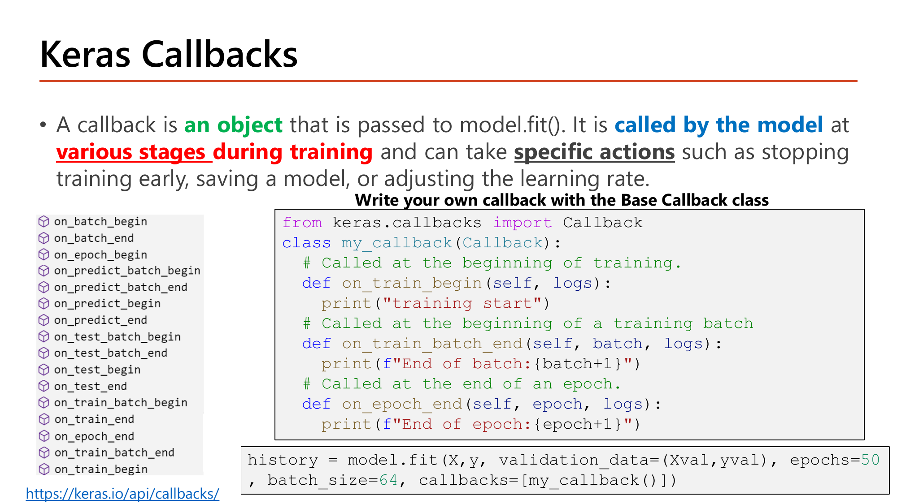
นิยามที่อาจารย์ทำสีไว้ทั้งประโยคคือหัวใจของหน้านี้: callback คือ an object that is passed to model.fit(). It is called by the model at various stages during training และสามารถ specific actions เช่นหยุดเทรนก่อนกำหนด, เซฟโมเดล, หรือปรับ learning rate. แยกคำสำคัญสามคำให้ชัด: (ก) มันเป็น object ไม่ใช่ฟังก์ชันลอยๆ — เราสร้างจาก class แล้วส่ง instance เข้าไป; (ข) called by the model แปลว่าเราไม่เคยเรียกเมธอดพวกนี้เอง Keras เรียกให้; (ค) various stages แปลว่ามีหลายจุดเวลาให้เลือกเสียบ ไม่ใช่จุดเดียว.
คอลัมน์ซ้ายของสไลด์ไล่ชื่อ "ช่องเสียบ" ทั้งหมดที่ Base Callback class มีให้ ซึ่งจับคู่กันเป็น begin/end เสมอ และแยกตามสามโหมดของโมเดล:
| โหมด | เมธอดที่เรียกได้ (จากสไลด์หน้า 1) | ถูกเรียกเมื่อ |
|---|---|---|
| เทรน (fit) | on_train_begin, on_train_end | เริ่ม/จบการเทรนทั้งหมด — อย่างละ 1 ครั้ง |
| เทรน (fit) | on_epoch_begin, on_epoch_end | เริ่ม/จบแต่ละ epoch — epoch ละครั้ง |
| เทรน (fit) | on_train_batch_begin, on_train_batch_end, on_batch_begin, on_batch_end | เริ่ม/จบแต่ละ batch ของการเทรน |
| ประเมิน (evaluate / validation) | on_test_begin, on_test_end, on_test_batch_begin, on_test_batch_end | ตอน evaluate() และตอนคำนวณ validation ท้าย epoch |
| ทำนาย (predict) | on_predict_begin, on_predict_end, on_predict_batch_begin, on_predict_batch_end | ตอน predict() |
จุดที่ข้อสอบชอบหลอกคือคำว่า test: hook ชื่อ on_test_* ไม่ได้หมายถึง test set ของเราเสมอไป — มันหมายถึง "โหมดประเมินผลโดยไม่อัปเดต weight" ซึ่งเกิดขึ้นทุกครั้งที่จบ epoch ถ้าเราส่ง validation_data เข้าไป. ในสคริปต์ที่อาจารย์รันในคาบ callback ที่ดัก on_test_batch_end พิมพ์ออกมา 2 บรรทัดต่อ epoch เพราะ validation มี 50 แถวและ batch ของการประเมินเป็น 32 ⇒ \(\lceil 50/32 \rceil = 2\).
คราวนี้มาดูโค้ดที่สไลด์เขียนไว้ — มันคือการสร้าง callback ของตัวเองจาก base class โดยเลือกเสียบแค่ 3 ช่อง:
from keras.callbacks import Callback
class my_callback(Callback):
# Called at the beginning of training.
def on_train_begin(self, logs):
print("training start")
# Called at the beginning of a training batch
def on_train_batch_end(self, batch, logs):
print(f"End of batch:{batch+1}")
# Called at the end of an epoch.
def on_epoch_end(self, epoch, logs):
print(f"End of epoch:{epoch+1}")
history = model.fit(X, y, validation_data=(Xval, yval), epochs=50,
batch_size=64, callbacks=[my_callback()])| โค้ด | ทำอะไร |
|---|---|
| from keras.callbacks import Callback | ดึง "แม่แบบ" ของ callback ทุกตัวเข้ามา. Callback คือ base class ที่มีเมธอดว่างๆ ครบทุก hook อยู่แล้ว |
| class my_callback(Callback): | สร้าง class ใหม่ที่สืบทอดจาก Callback — เขียนทับ (override) เฉพาะเมธอดที่เราสนใจ ที่ไม่ได้เขียนก็ยังมีอยู่แต่ไม่ทำอะไร |
| def on_train_begin(self, logs): | ชื่อเมธอดต้องสะกดตรงเป๊ะ เพราะ Keras เรียกด้วยชื่อ. self คือตัว object เอง, logs คือ dict ของตัวเลขที่ Keras ส่งมาให้ ณ จังหวะนั้น (ตรงนี้ยังว่าง) |
| print("training start") | สิ่งที่เราอยากทำ ณ จุดนั้น — ในของจริงจะเป็น "เปิดไฟล์ log", "จดเวลาเริ่ม" ฯลฯ |
| def on_train_batch_end(self, batch, logs): | รับพารามิเตอร์เพิ่ม 1 ตัวคือ batch = ดัชนี batch ภายใน epoch นั้น เริ่มนับจาก 0 |
| print(f"End of batch:{batch+1}") | บวก 1 เพื่อให้มนุษย์อ่านเป็น 1, 2, 3 (f-string คือการแทรกค่าตัวแปรลงในข้อความ) |
| def on_epoch_end(self, epoch, logs): | พารามิเตอร์ตัวที่สองชื่อ epoch = ดัชนี epoch เริ่มจาก 0 เช่นกัน |
| callbacks=[my_callback()] | จุดที่มือใหม่พลาดบ่อยที่สุด: ต้องมีวงเล็บ () เพื่อสร้าง objectก่อน และต้องอยู่ใน list เพราะใส่ได้หลายตัว |
| validation_data=(Xval, yval) | ให้ Keras ประเมินหลังจบทุก epoch ⇒ logs ของ on_epoch_end จะมี val_loss/val_accuracy เพิ่มมาด้วย |
ผลลัพธ์ที่คาด (ตัวเลขจากสคริปต์ที่รันในคาบ เมื่อลดเหลือ epochs=3, batch_size=64, train 150 แถว): พิมพ์ training start 1 บรรทัด จากนั้นวนซ้ำ 3 รอบของ End of batch:1 / End of batch:2 / End of batch:3 แล้วตามด้วย End of epoch:1 … จนถึง End of epoch:3. และเมื่อพิมพ์ logs.keys() ดูจะได้ตามตารางนี้ — ข้อมูลที่ callback "มองเห็น" ต่างกันตามจังหวะ:
| จังหวะ | logs.keys() ที่ได้จริง | ทำไม |
|---|---|---|
on_train_begin | dict_keys([]) — ว่าง | ยังไม่ได้คำนวณอะไรเลย |
on_train_batch_end | ['accuracy', 'loss'] | มีแค่ค่าของข้อมูล train ใน batch นั้น |
on_epoch_end | ['accuracy', 'loss', 'val_accuracy', 'val_loss'] | ประเมิน validation เสร็จแล้ว จึงเพิ่ม 2 ค่ามา |
ตารางนี้อธิบายกฎเหล็กข้อหนึ่งที่จะใช้ทั้งบท: callback ใดๆ ที่ตัดสินใจจาก val_loss (EarlyStopping, ReduceLROnPlateau, ModelCheckpoint แบบ save_best_only) ทำงานได้เฉพาะที่จังหวะจบ epoch เท่านั้น เพราะระดับ batch ไม่มีค่า validation ให้ดู.
ต้องปัดขึ้นเพราะเศษ 22 แถวสุดท้ายก็ยังต้องเทรน จะทิ้งไม่ได้
on_train_begin: 1 ครั้ง (ต้นการเทรนเท่านั้น)
on_train_batch_end: \(3 \text{ batch} \times 3 \text{ epoch} = 9\) ครั้ง
on_epoch_end: 3 ครั้ง
13 บรรทัด. ถ้าเปลี่ยน batch_size เป็น 32 จะได้ \(\lceil 150/32 \rceil = 5\) batch/epoch ⇒ \(1 + 15 + 3 = 19\) บรรทัด — สังเกตว่า batch size เล็กลง = callback ระดับ batch ถูกเรียกถี่ขึ้น ซึ่งเป็นเหตุผลที่ TensorBoard ตั้ง update_freq='epoch' เป็นค่าเริ่มต้น (ดู §6) ไม่งั้นไฟล์ log จะบวมมาก.
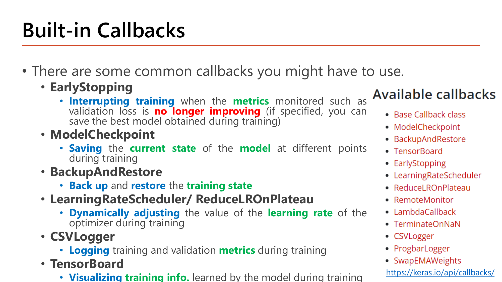
ข่าวดีคือของที่ต้องใช้บ่อยมีให้สำเร็จรูปแล้ว ไม่ต้องเขียน class เอง. อาจารย์ทำสีคำกริยาของแต่ละตัวไว้ ซึ่งก็คือ "หน้าที่" ของมันในหนึ่งคำ — ท่องคู่กริยา-ชื่อคลาสนี้ไว้ เพราะข้อสอบชอบสลับ:
EarlyStopping — Interrupting training when the metrics monitored such as validation loss is no longer improving (ถ้าระบุไว้ ยังเก็บโมเดลที่ดีที่สุดระหว่างเทรนไว้ให้ได้ด้วย). กริยาคือ "ขัดจังหวะ/หยุด" ไม่ใช่ "เซฟ"ModelCheckpoint — Saving the current state of the model at different points during training. กริยาคือ "เซฟ" และคำว่า current state บอกว่ามันเซฟสภาพ ณ ตอนนั้น ไม่ได้แปลว่าดีที่สุดโดยอัตโนมัติBackupAndRestore — Back up and restore the training state. ต่างจากตัวบนตรงคำว่า training state (สภาพการเทรน = weight + เลข epoch + optimizer) ไม่ใช่แค่ตัวโมเดล และมันมีหน้าที่ "เอากลับคืนมา" ด้วยLearningRateScheduler / ReduceLROnPlateau — Dynamically adjusting the value of the learning rate of the optimizer during training. คำว่า dynamically = เปลี่ยนระหว่างทาง ไม่ใช่ตั้งครั้งเดียวตอน compileCSVLogger — Logging training and validation metrics during training. แค่ "จด" ลงไฟล์ ไม่ตัดสินใจอะไรเลยTensorBoard — Visualizing training info. learned by the model during training. แค่ "เขียน log ให้โปรแกรมดูกราฟไปอ่าน" ไม่ได้เปลี่ยนการเทรนคอลัมน์ขวาของสไลด์ยังไล่ callback ทั้งหมดที่ Keras มี ซึ่งมีตัวที่ไม่ได้สอนละเอียดแต่ควรรู้จักชื่อ: Base Callback class, ModelCheckpoint, BackupAndRestore, TensorBoard, EarlyStopping, LearningRateScheduler, ReduceLROnPlateau, RemoteMonitor (ส่งผลไปเซิร์ฟเวอร์อื่น), LambdaCallback (เขียน callback สั้นๆ จากฟังก์ชันเดียว), TerminateOnNaN (หยุดทันทีเมื่อ loss เป็น NaN — โยงกับอาการ exploding gradient ใน §7), CSVLogger, ProgbarLogger (แถบความคืบหน้าที่เราเห็นตอน fit ก็เป็น callback!), SwapEMAWeights.
จับคู่ "ปัญหาที่เจอ → callback ที่ใช้" ให้ได้ ก่อนจะลงรายละเอียดทีละตัว:
| อยากได้อะไร | ใช้ callback | หัวข้อ |
|---|---|---|
| หยุดเทรนเมื่อ validation ไม่ดีขึ้นแล้ว | EarlyStopping | §2 |
| เซฟโมเดล/weight ระหว่างเทรน และเก็บตัวที่ดีที่สุด | ModelCheckpoint | §3 |
| เทรนต่อได้หลังไฟดับหรือ session หลุด | BackupAndRestore | §4 |
| ปรับ learning rate ระหว่างเทรน | LearningRateScheduler, ReduceLROnPlateau | §5 |
| บันทึกผลทุก epoch เป็นไฟล์ csv | CSVLogger | §5 |
| ดูกราฟและ histogram ของ weight | TensorBoard | §6 |
callbacks=[a, b] ทุกตัวถูกเรียกที่จุดเดียวกันตามลำดับใน list. ถ้าลืมวงเล็บเขียน callbacks=[my_callback] (ส่ง class ไม่ใช่ object) จะ error; ถ้าลืม list เขียน callbacks=my_callback() Keras รุ่นใหม่ยอมรับได้แต่เป็นสไตล์ที่ไม่ควรใช้.model.fit() ไม่ใช่ argument ตัวเลขหรือฟังก์ชันเปล่าๆ. กับดัก: ตัวเลือกที่บอกว่า "เป็นฟังก์ชันที่เราเรียกเองหลังเทรนจบ"save_best_only)ปัญหาก่อน: เราตั้ง epochs=50 เพราะเดาว่า "น่าจะพอ" แต่ความจริงคือกราฟ val_loss มักลดลงช่วงแรก แตะจุดต่ำสุดที่ไหนสักแห่ง แล้วค่อยๆ ไต่ขึ้นเพราะโมเดลเริ่มจำ training set (overfit — Lesson 4). เทรนต่อหลังจุดนั้นจึงเป็นการเสียเวลาและทำให้โมเดลแย่ลง. แต่จุดต่ำสุดอยู่ epoch ไหน เราไม่รู้ล่วงหน้า — ต้องให้โปรแกรมเฝ้าดูแทน.
แต่ "แย่ลง" ตัดสินยากกว่าที่คิด เพราะ val_loss ไม่ได้ลดเรียบๆ มันกระเพื่อมขึ้นลงทุก epoch (validation มีแค่ 50 แถว เปลี่ยนไปนิดเดียวก็แกว่ง). ถ้าหยุดทันทีที่แย่ลง 1 ครั้ง เราจะหยุดเพราะ noise. EarlyStopping จึงมี "ปุ่มปรับความอดทน" ให้สองตัว คือ patience (ยอมให้แย่ติดกันได้กี่ครั้ง) และ min_delta (ดีขึ้นเท่าไรถึงจะนับว่าดีขึ้นจริง).
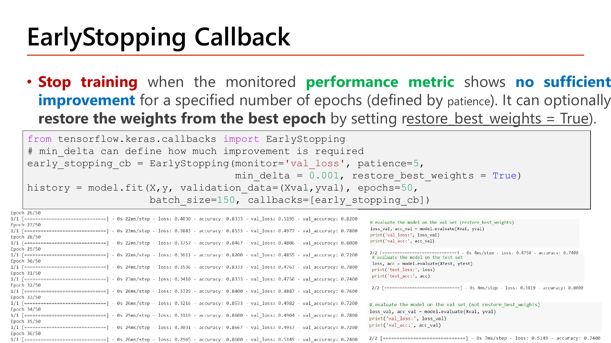
ประโยคที่อาจารย์ทำสีไว้เป็นคำนิยามที่ใช้ตอบข้อสอบได้เลย: EarlyStopping จะ Stop training when the monitored performance metric shows no sufficient improvement ต่อเนื่องเป็นจำนวน epoch ที่กำหนดด้วย patience และเลือกได้ว่าจะให้คืน weight ของ epoch ที่ดีที่สุดกลับมาไหมด้วย restore_best_weights=True. คำที่ต้องอ่านช้าๆ คือ no sufficient improvement — ไม่ใช่ "แย่ลง" เฉยๆ แต่คือ "ดีขึ้นไม่พอตามเกณฑ์" ซึ่งรวมกรณี "ดีขึ้นนิดเดียว" เข้าไปด้วย. นี่คือที่มาของ min_delta.
from tensorflow.keras.callbacks import EarlyStopping
# min_delta can define how much improvement is required
early_stopping_cb = EarlyStopping(monitor='val_loss', patience=5,
min_delta=0.001, restore_best_weights=True)
history = model.fit(X, y, validation_data=(Xval, yval), epochs=50,
batch_size=150, callbacks=[early_stopping_cb])| โค้ด | ทำอะไร |
|---|---|
| from tensorflow.keras.callbacks import EarlyStopping | นำเข้าคลาส. เขียน from keras.callbacks import EarlyStopping ก็ได้ผลเดียวกันใน Keras 3 (สไลด์ใช้ทั้งสองแบบสลับกัน) |
| monitor='val_loss' | ตัวเลขที่จะเฝ้าดู — ต้องเป็น key ที่มีอยู่จริงใน logs เช่น loss, accuracy, val_loss, val_accuracy. ถ้าสะกดผิดหรือไม่ได้ส่ง validation_data มา callback จะเตือนแล้วไม่ทำงาน |
| patience=5 | ยอมให้ "ไม่ดีขึ้น" ติดต่อกัน ได้ 5 epoch ก่อนสั่งหยุด. ตัวนับนี้รีเซ็ตเป็น 0 ทุกครั้งที่เจอค่าที่ดีขึ้นจริง |
| min_delta=0.001 | เกณฑ์ขั้นต่ำของ "ความดีขึ้น" เทียบกับค่าที่ดีที่สุดเท่าที่เคยเจอ (ไม่ใช่เทียบ epoch ก่อนหน้า!) ค่าเริ่มต้นคือ 0 |
| restore_best_weights=True | เมื่อหยุด ให้โหลด weight ของ epoch ที่ดีที่สุดกลับเข้าโมเดล. ค่าเริ่มต้นคือ False ซึ่งจะทิ้งให้โมเดลค้างอยู่ที่ weight ของ epoch สุดท้าย (ที่แย่กว่า) |
| batch_size=150 | เท่ากับจำนวนตัวอย่าง train ทั้งหมดพอดี ⇒ 1 batch ต่อ epoch (เห็นเป็น 1/1 ใน log ของสไลด์) = full-batch gradient descent |
| callbacks=[early_stopping_cb] | ส่ง object ที่สร้างไว้ (ไม่ใช่ EarlyStopping เปล่าๆ) เข้าไปใน list |
ผลลัพธ์จริงที่พิมพ์ในสไลด์ (คัดมาจาก log ของหน้า 3 — คอลัมน์ที่ใช้ตัดสินใจคือ val_loss ตัวสุดท้ายของแต่ละบรรทัด):
| Epoch | loss | accuracy | val_loss | val_accuracy |
|---|---|---|---|---|
| 26/50 | 0.4030 | 0.8333 | 0.5195 | 0.8200 |
| 27/50 | 0.3883 | 0.8533 | 0.4977 | 0.7800 |
| 28/50 | 0.3757 | 0.8467 | 0.4806 | 0.8000 |
| 31/50 | 0.3410 | 0.8333 | 0.4750 | 0.7400 |
| 36/50 | 0.2965 | 0.8600 | 0.5149 | 0.7400 |
อ่านตารางนี้ให้เป็นคือได้ครึ่งบทแล้ว: คอลัมน์ loss (ของ train) ลดลงเรื่อยๆ ตลอด 0.4030 → 0.2965 ไม่มีสะดุด แต่ val_loss ลงไปแตะก้นที่ 0.4750 ตอน epoch 31 แล้วกลับสูงขึ้นเป็น 0.5149 — นี่คือหน้าตาของ overfitting ที่เห็นด้วยตัวเลข: โมเดลเก่งขึ้นกับข้อมูลที่เคยเห็น แต่แย่ลงกับข้อมูลที่ไม่เคยเห็น. ถ้าเราดูแต่ loss อย่างเดียวจะไม่มีวันรู้ว่าต้องหยุด — เหตุผลที่ monitor ต้องเป็น val_loss ไม่ใช่ loss.
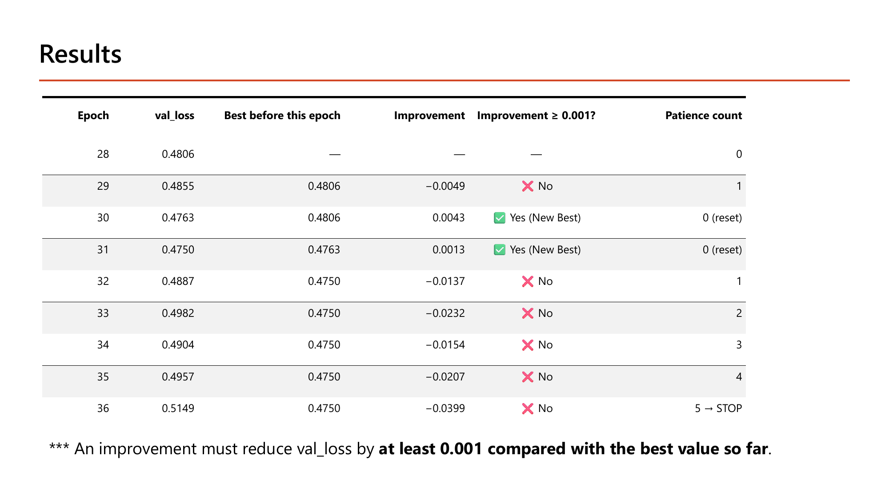
หน้า 4 คืองานที่อาจารย์ทำให้ดูทีละบรรทัดว่ากลไกตัดสินใจอย่างไร และปิดท้ายด้วยหมายเหตุสามดาว: "การจะนับว่าดีขึ้น ต้องลด val_loss ได้อย่างน้อย 0.001 เทียบกับค่าที่ดีที่สุดเท่าที่ผ่านมา". ประโยคท้ายนี้สำคัญกว่าที่เห็น — ลองไล่ตามเองทีละขั้น:
กติกาที่ใช้ตัดสินแต่ละ epoch (เมื่อ monitor เป็นค่าที่ยิ่งน้อยยิ่งดีอย่าง val_loss):
"ค่าดีที่สุดเดิม ลบ ค่าใหม่" ต้องมากกว่าหรือเท่ากับเกณฑ์ ถึงจะนับว่าดีขึ้น
best ให้เป็นค่าใหม่ และรีเซ็ตตัวนับ patience เป็น 0patience ก็หยุดเทรนติดลบแปลว่าแย่ลงด้วยซ้ำ ⇒ ไม่ผ่านเกณฑ์ ⇒ ตัวนับ = 1 (best ยังเป็น 0.4806)
ผ่าน ⇒ best = 0.4763 และตัวนับ รีเซ็ตเป็น 0 (ความอดทนกลับมาเต็มถัง)
ผ่านแบบฉิวเฉียด (เกินเกณฑ์แค่ 0.0003) ⇒ best = 0.4750, ตัวนับ = 0. สังเกตว่าตัวเทียบเปลี่ยนเป็น 0.4763 แล้ว เพราะ best ถูกอัปเดตไปตั้งแต่ขั้นก่อน
ทุกบรรทัดเทียบกับ 0.4750 ตัวเดิม เพราะไม่มี best ใหม่เลย. จุดที่หลายคนพลาด: epoch 34 (0.4904) ดีกว่า epoch 33 (0.4982) แต่ตัวนับไม่รีเซ็ต เพราะเทียบกับ best ไม่ใช่เทียบกับ epoch ก่อนหน้า
ครบ ⇒ STOP — ตรงกับช่องสุดท้ายของตารางในสไลด์ที่เขียนว่า "5 → STOP"
หยุดที่ epoch 36 และเพราะตั้ง restore_best_weights=True โมเดลจะถูกย้อน weight กลับไปเป็นของ epoch 31 (val_loss 0.4750). epoch 32–36 ทั้ง 5 รอบคือ "ค่าเวลาที่จ่ายไปเพื่อความมั่นใจว่ามันไม่ดีขึ้นแล้วจริงๆ".
หลักฐานว่าการคืน weight มีผลจริง — สไลด์หน้า 3 ให้ผลการ evaluate สามชุดไว้เทียบ ซึ่งเป็นตัวเลขที่ตอบคำถาม "แล้วมันต่างกันเท่าไร":
| วัดอะไร | ผลลัพธ์ที่พิมพ์ | ตรงกับ epoch ไหน |
|---|---|---|
validation set ตอน restore_best_weights=True | loss 0.4750, accuracy 0.7400 | epoch 31 (best) |
| validation set ตอนไม่ restore | loss 0.5149, accuracy 0.7400 | epoch 36 (epoch สุดท้าย) |
| test set (ด้วย weight ที่ restore แล้ว) | loss 0.3819, accuracy 0.8000 | epoch 31 |
0.4750 เทียบกับ 0.5149 คือส่วนต่าง 0.0399 ของ loss ที่ได้มาฟรีๆ จากการเติมอาร์กิวเมนต์ตัวเดียว. และสังเกตอีกอย่าง: test loss (0.3819) ต่ำกว่า validation loss (0.4750) ซึ่งดูแปลก แต่ไม่ผิด — ทั้งสองชุดมีแค่ 50 แถว การสุ่มแบ่งจึงทำให้ชุดหนึ่งบังเอิญง่ายกว่าอีกชุดได้ง่ายมาก. บทเรียนคืออย่าอ่านตัวเลขทศนิยมตำแหน่งท้ายๆ ของ dataset จิ๋วเป็นเรื่องจริงจัง (อาจารย์เองเขียนหมายเหตุนี้ไว้ในสคริปต์ว่า "for experiment only").
epoch 29 ตัวนับ 1 → epoch 30, 31 ดีขึ้น รีเซ็ตทั้งคู่ → epoch 32, 33, 34 ตัวนับ 1, 2, 3
$$\text{ตัวนับ} = 3 = \text{patience} \;\Rightarrow\; \text{หยุดที่ epoch } 34$$weight ที่คืนมายังเป็นของ epoch 31 เหมือนเดิม — เราแค่ประหยัดเวลาไป 2 epoch โดยไม่เสียคุณภาพ
สังเกตว่า epoch 31 เทียบกับ 0.4806 ไม่ใช่ 0.4763 เพราะ best ไม่เคยถูกอัปเดตเลย. ตัวนับจึงเดินยาว: 29→1, 30→2, 31→3, 32→4, 33→5
$$\Rightarrow\; \text{หยุดที่ epoch } 33,\quad \text{คืน weight ของ epoch } 28\ (0.4806)$$เราได้โมเดลที่ val_loss แย่กว่าเดิม 0.0056 เพียงเพราะตั้งเกณฑ์เข้มเกินไป
patience เล็กลง = จบเร็วขึ้นแต่ยังได้ของดีเท่าเดิม (ถ้าไม่เล็กจนตัดตอนความก้าวหน้าจริง); min_delta ใหญ่เกินไป = มองความก้าวหน้าจริงเป็น noise แล้วหยุดเร็วเกินและได้โมเดลที่แย่กว่า. ค่า default ของ min_delta คือ 0 ซึ่งแปลว่า "ดีขึ้นแม้แต่นิดเดียวก็นับ" — ปลอดภัยที่สุดถ้าไม่แน่ใจ.
val_loss ไม่ลดเรียบๆ — ดูตารางจริง: 0.4855, 0.4763, 0.4750, 0.4887 ขึ้นๆ ลงๆ. patience ให้เวลาดูแนวโน้มแทนที่จะตกใจกับจุดเดียว, min_delta กันไม่ให้การขยับระดับ 0.0001 นับเป็นความก้าวหน้า, และ restore_best_weights แก้ปัญหาที่ว่าตอนหยุด weight ในมือเป็นของ epoch แย่ๆ เสมอ (เพราะกว่าจะหยุดได้ต้องแย่ติดกันครบ patience รอบ).monitor เป็น val_accuracy ต้องเปลี่ยนทิศทางการเปรียบเทียบด้วย (ยิ่งมากยิ่งดี) — Keras เดาให้เองจากชื่อเมื่อ mode='auto' แต่ถ้าใช้ metric ชื่อแปลกๆ ต้องระบุ mode เอง. ถ้าไม่ตั้ง restore_best_weights ได้ weight ของ epoch สุดท้าย (36, val_loss 0.5149 = แย่ที่สุดในตาราง).patience=3 การเทรนจะหยุดที่ epoch ใด?min_delta=0.01, patience=5, restore_best_weights=True (best เริ่ม 0.4806 ที่ epoch 28) weight ของ epoch ใดถูกคืนมา?monitor ไม่ใช่ "loss ของ training set" โดยอัตโนมัติ. กับดัก: ตัวเลือกที่เขียน monitor='loss' แล้วอ้างว่าจับ overfitting ได้min_delta. กับดัก: นิยามว่า "val_loss เพิ่มขึ้นติดกัน N ครั้ง" ซึ่งตกกรณีที่สองEarlyStopping(monitor=..., patience=..., min_delta=..., restore_best_weights=...); ค่า default ของ restore_best_weights คือ False และของ min_delta คือ 0; ตัวนับ patience รีเซ็ตเมื่อเจอ best ใหม่ (ไม่ใช่สะสมไปเรื่อยๆ); การเทียบใช้ best ไม่ใช่ epoch ก่อนหน้าsave, save_weights และ ModelCheckpointปัญหาก่อน: §2 จบลงด้วยโมเดลที่ดีที่สุดอยู่ในหน่วยความจำ ปิด notebook ปุ๊บก็หายหมด. และถ้าเทรนนาน 4 ชั่วโมงแล้วเครื่องดับตอนชั่วโมงที่ 3 ก็ไม่เหลืออะไร. เราจึงต้องรู้สองเรื่อง: (ก) เซฟโมเดลด้วยมือทำอย่างไร และเซฟ "อะไร" ได้บ้าง (สไลด์หน้า 5) (ข) จะให้มันเซฟอัตโนมัติระหว่างเทรนอย่างไร (หน้า 6–8).
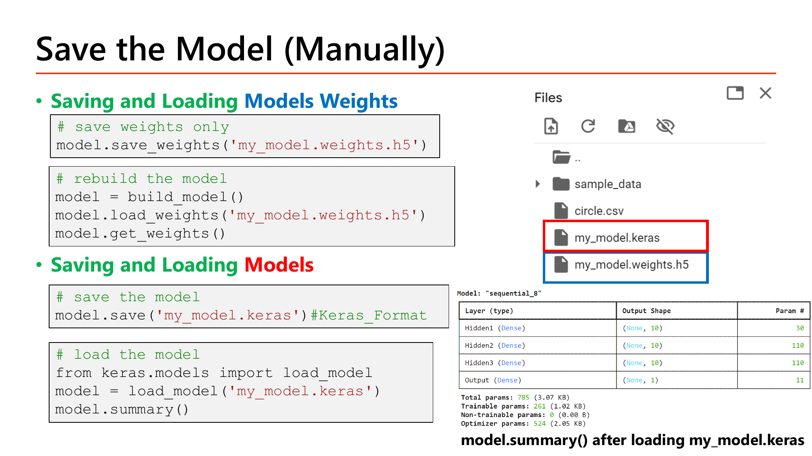
อาจารย์แยกหัวข้อหน้านี้เป็นสองบรรทัดที่ทำสีไว้: Saving and Loading Models Weights กับ Saving and Loading Models — ต่างกันแค่คำว่า Weights คำเดียว แต่ผลต่างกันมาก. แบบแรกเก็บเฉพาะ "ตัวเลขในโมเดล" แบบที่สองเก็บ "ทั้งตัวโมเดล". เปรียบเทียบง่ายๆ: การเซฟ weight เหมือนจดแต่คำตอบของข้อสอบลงกระดาษเปล่า — ถ้าไม่มีตัวข้อสอบ (โครงสร้างโมเดล) อยู่ในมือ คำตอบนั้นก็ใช้ไม่ได้ จึงต้อง build_model() ขึ้นมาใหม่ก่อนเสมอ; ส่วนการเซฟทั้งโมเดลเหมือนถ่ายเอกสารทั้งข้อสอบพร้อมคำตอบ หยิบมาใช้ได้เลย.
# save weights only
model.save_weights('my_model.weights.h5')
# rebuild the model
model = build_model()
model.load_weights('my_model.weights.h5')
model.get_weights()
# save the model
model.save('my_model.keras') #Keras_Format
# load the model
from keras.models import load_model
model = load_model('my_model.keras')
model.summary()| โค้ด | ทำอะไร |
|---|---|
| model.save_weights('my_model.weights.h5') | เขียนเฉพาะค่าตัวเลขของ weight และ bias ลงไฟล์. นามสกุลต้องลงท้าย .weights.h5 ไม่งั้น Keras 3 จะ error |
| model = build_model() | ขั้นที่ขาดไม่ได้: สร้าง "โครง" ที่มี layer เรียงเหมือนเดิมเป๊ะ (จำนวน layer, จำนวน unit, activation) ก่อน จึงจะเทค่าลงได้ |
| model.load_weights('my_model.weights.h5') | เทค่าที่เซฟไว้ลงในโครง. ถ้าโครงไม่ตรง (เช่น เปลี่ยน 10 unit เป็น 20) จะ error เรื่อง shape ไม่ตรง |
| model.get_weights() | คืน list ของ numpy array (kernel และ bias สลับกันทีละ layer) ไว้ตรวจด้วยตาว่าค่าถูกโหลดมาจริง |
| model.save('my_model.keras') | เซฟทุกอย่าง: โครงสร้าง + weight + การตั้งค่า compile + สถานะ optimizer. คอมเมนต์ #Keras_Format ย้ำว่านามสกุล .keras คือรูปแบบมาตรฐานใหม่ (แทน .h5 แบบเก่า) |
| from keras.models import load_model | ฟังก์ชันสำหรับอ่านไฟล์ .keras กลับมาเป็น object โมเดล |
| model = load_model('my_model.keras') | ได้โมเดลพร้อมใช้ทันที — ไม่ต้องมีโค้ด build_model() อยู่ในไฟล์เลยด้วยซ้ำ |
| model.summary() | พิมพ์ตารางสรุป layer + จำนวนพารามิเตอร์ ใช้ยืนยันว่าโหลดถูกตัว |
ผลลัพธ์ที่คาด (ตามที่สไลด์แสดงหลังโหลด my_model.keras): แผงไฟล์แสดงสองไฟล์คือ my_model.keras และ my_model.weights.h5 ส่วน model.summary() พิมพ์ layer สี่ชั้น Hidden1/Hidden2/Hidden3/Output พร้อม Param # = 30, 110, 110, 11 และท้ายตาราง Total params: 785 (3.07 KB), Trainable params: 261 (1.02 KB), Non-trainable params: 0 (0.00 B), Optimizer params: 524 (2.05 KB).
สรุปความต่างที่ต้องตอบให้ได้:
save_weights('x.weights.h5') | save('x.keras') | |
|---|---|---|
| เก็บ | เฉพาะตัวเลข weight/bias | โครงสร้าง + weight + compile config + สถานะ optimizer |
| ตอนโหลด | ต้อง build_model() ก่อน แล้วค่อย load_weights(...) | load_model('x.keras') ได้เลย |
| เทรนต่อได้ไหม | ได้ แต่ optimizer เริ่มนับใหม่ (momentum หาย) | ได้เต็มรูปแบบ เพราะมีสถานะ optimizer ติดมาด้วย |
| ขนาดไฟล์ | เล็กกว่า (261 ค่า) | ใหญ่กว่า (785 ค่า = 3.07 KB ในตัวอย่าง) |
ตัวเลข 785 / 261 / 524 ในสไลด์ไม่ได้มาลอยๆ — มันคำนวณได้ และเป็นโจทย์ที่ออกสอบง่ายมาก:
Dense layer หนึ่งชั้นที่รับ input \(n_{in}\) ค่า แล้วให้ output \(n_{out}\) ค่า มีตัวเลขที่ต้องเรียนรู้เท่าไร? ทุก output unit ต้องมีสายเชื่อมไปยังทุก input unit (คนละเส้น คนละน้ำหนัก) บวกด้วย bias อีกตัวละ 1:
$$\#\text{params} = \underbrace{n_{in} \times n_{out}}_{\text{weight (kernel)}} + \underbrace{n_{out}}_{\text{bias}}$$ลองกับเลขเล็กๆ: input 2 ค่า → output 3 unit. weight = \(2\times3 = 6\) เส้น (จาก \(x_1\) ไป 3 unit, จาก \(x_2\) ไป 3 unit) บวก bias 3 ตัว รวม 9. เช็คด้วยการวาด: unit ที่ 1 ใช้ \(\theta_{11}x_1 + \theta_{12}x_2 + b_1\) = 3 ตัวเลข × 3 unit = 9 ✔
สูตรนี้มาจาก Lesson 2 (รูปแบบ \(z = \Theta a + b\)) — ที่นี่แค่เอามานับจำนวนช่องในเมทริกซ์.
ตรงกับคอลัมน์ Param # ในสไลด์ (30, 110, 110, 11) เป๊ะ
นี่คือจำนวนตัวเลขที่ gradient descent ปรับ และเป็นทุกอย่างที่ต้องใช้ตอน predict
Adam (Lesson 4) เก็บค่าเฉลี่ยเคลื่อนที่ 2 ชุดต่อทุกพารามิเตอร์ — ชุดหนึ่งของ gradient (\(m\)) อีกชุดของ gradient ยกกำลังสอง (\(v\)):
$$2 \times 261 = 522$$แล้วบวกตัวแปรเดี่ยวอีก 2 ตัว (ตัวนับจำนวน step กับ learning rate)
$$522 + 2 = 524$$Total 785 = Trainable 261 + Optimizer 524. ข้อสรุปที่ใช้ตอบข้อสอบ: ตัวเลข Optimizer params จะโผล่มาเฉพาะตอนโหลดไฟล์ .keras ที่เซฟด้วย model.save() เท่านั้น — ถ้าเซฟด้วย save_weights แล้วโหลดกลับ summary() จะขึ้น Total 261 เฉยๆ เพราะไม่มีสถานะ optimizer ติดมา (ผลนี้ยืนยันได้จากสคริปต์ในคาบที่พิมพ์ Total params: 261 หลัง load_weights แต่ Total params: 785 หลัง load_model).
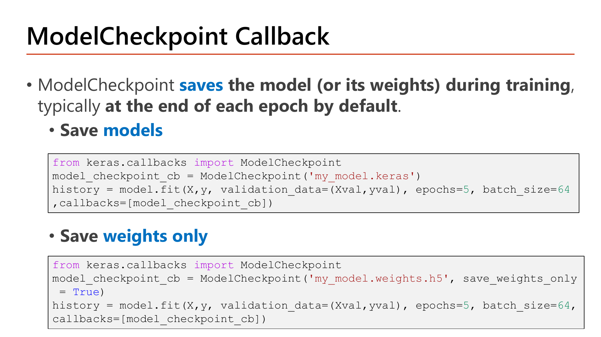
ทีนี้เอาการเซฟมาใส่ในการเทรนให้อัตโนมัติ. สไลด์สรุปว่า ModelCheckpoint saves the model (or its weights) during training, typically at the end of each epoch by default และให้ทางเลือกสองทางคือ Save models กับ Save weights only — ซึ่งก็คือคู่ model.save / model.save_weights ของหน้า 5 นั่นเอง แต่ถูกเรียกให้เองทุกจบ epoch.
from keras.callbacks import ModelCheckpoint
model_checkpoint_cb = ModelCheckpoint('my_model.weights.h5', save_weights_only=True)
history = model.fit(X, y, validation_data=(Xval, yval), epochs=5, batch_size=64,
callbacks=[model_checkpoint_cb])
from keras.callbacks import ModelCheckpoint
model_checkpoint_cb = ModelCheckpoint('my_model.keras')
history = model.fit(X, y, validation_data=(Xval, yval), epochs=5, batch_size=64,
callbacks=[model_checkpoint_cb])| โค้ด | ทำอะไร |
|---|---|
| ModelCheckpoint('my_model.weights.h5', save_weights_only=True) | อาร์กิวเมนต์ตัวแรกคือ filepath (ไม่มีชื่อกำกับ ต้องอยู่ตำแหน่งแรกเสมอ). save_weights_only=True บอกให้เรียก save_weights แทน save ⇒ นามสกุลต้องเป็น .weights.h5 |
| ModelCheckpoint('my_model.keras') | ไม่ระบุ save_weights_only ⇒ ใช้ค่าเริ่มต้น False ⇒ เซฟทั้งโมเดล ⇒ นามสกุลต้องเป็น .keras |
| epochs=5, batch_size=64 | 5 epoch × 3 batch = 15 batch ทั้งหมด (train 150 แถว) |
| callbacks=[model_checkpoint_cb] | ใส่ใน list เหมือนเดิม. ใช้ร่วมกับ early_stopping_cb ได้: callbacks=[early_stopping_cb, model_checkpoint_cb] |
ผลลัพธ์ที่คาด: เทรนจบได้ไฟล์เดียว (my_model.weights.h5 หรือ my_model.keras) ที่ถูกเขียนทับใหม่ทุกจบ epoch. เพราะชื่อไฟล์ตายตัว ไฟล์สุดท้ายที่เหลือจึงเป็นของ epoch ที่ 5 (epoch สุดท้าย) เสมอ — ไม่ใช่ epoch ที่ดีที่สุด. ในสคริปต์ที่รันในคาบจึงเห็นผลนี้ชัด: โมเดลที่ค้างในหน่วยความจำ (มาจาก EarlyStopping ที่ restore แล้ว) ให้ test_loss 0.4264 แต่ weight ที่โหลดจากไฟล์ checkpoint ให้ 0.3993 — คนละตัวกัน. นี่คือเหตุผลที่ต้องมีหน้าถัดไป.
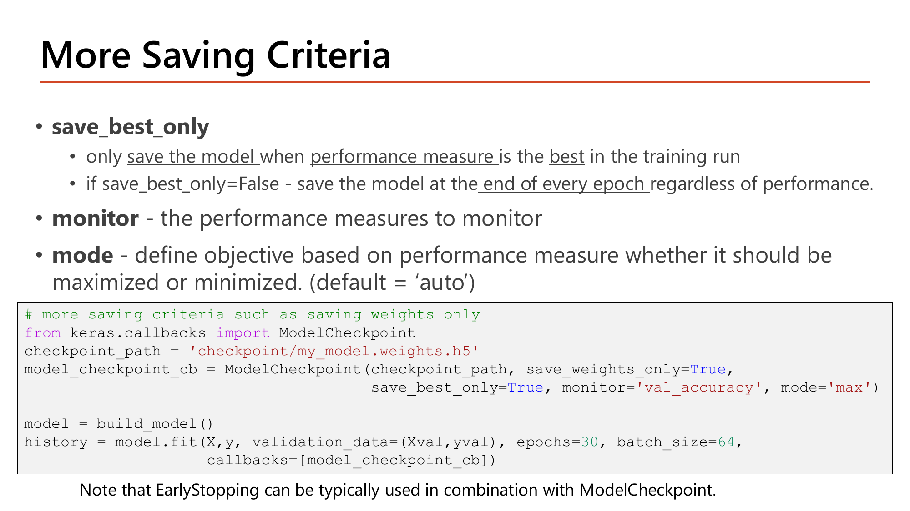
สไลด์หน้า 7 เติมสามอาร์กิวเมนต์ที่เปลี่ยน "เซฟทุก epoch" ให้เป็น "เซฟเฉพาะตอนดีที่สุด" และย้ำท้ายหน้าว่า EarlyStopping มักถูกใช้คู่กับ ModelCheckpoint. ความหมายของแต่ละตัวตามที่สไลด์เขียน:
| อาร์กิวเมนต์ | สไลด์บอกว่า | แปลเป็นภาษาคน |
|---|---|---|
save_best_only | only save the model when performance measure is the best in the training run; ถ้า False จะ save the model at the end of every epoch regardless of performance | เขียนไฟล์เฉพาะเมื่อเจอค่าที่ดีที่สุดใหม่ ⇒ ไฟล์ที่เหลือคือ "ตัวที่ดีที่สุด" ไม่ใช่ "ตัวสุดท้าย" |
monitor | the performance measures to monitor | ใช้ตัวเลขไหนตัดสิน — ต้องมีจริงใน logs (เช่น val_accuracy) |
mode | define objective based on performance measure whether it should be maximized or minimized (default = 'auto') | 'max' สำหรับ accuracy, 'min' สำหรับ loss; 'auto' ให้ Keras เดาจากชื่อ metric |
# more saving criteria such as saving weights only
from keras.callbacks import ModelCheckpoint
checkpoint_path = 'checkpoint/my_model.weights.h5'
model_checkpoint_cb = ModelCheckpoint(checkpoint_path, save_weights_only=True,
save_best_only=True, monitor='val_accuracy', mode='max')
model = build_model()
history = model.fit(X, y, validation_data=(Xval, yval), epochs=30, batch_size=64,
callbacks=[model_checkpoint_cb])| โค้ด | ทำอะไร |
|---|---|
| checkpoint_path = 'checkpoint/my_model.weights.h5' | ใส่โฟลเดอร์ checkpoint/ นำหน้าเพื่อไม่ให้ไฟล์เกลื่อน Keras สร้างโฟลเดอร์ให้เองถ้ายังไม่มี |
| save_weights_only=True | เซฟแค่ตัวเลข ⇒ ตอนโหลดต้อง build_model() ก่อน |
| save_best_only=True | หัวใจของหน้านี้: เขียนไฟล์เฉพาะตอนที่ monitor ดีที่สุดเท่าที่เคยเห็นในรอบการเทรนนี้ |
| monitor='val_accuracy' | ตัดสินด้วย accuracy บน validation — เลือกใช้เพราะเป็นตัวเลขที่ "สื่อสาร" ง่ายกว่า loss |
| mode='max' | ต้องคู่กับ val_accuracy เพราะ accuracy ยิ่งสูงยิ่งดี. ถ้าเผลอใส่ 'min' callback จะเซฟเฉพาะตอน accuracy ต่ำที่สุด = ได้โมเดลที่แย่ที่สุด (ข้อสอบชอบหลอกตรงนี้) |
| epochs=30 | ตั้งเยอะได้ไม่กลัวเปลือง ถ้าใช้คู่ EarlyStopping ตามหมายเหตุท้ายสไลด์ |
ผลลัพธ์ที่คาด: ในโฟลเดอร์ checkpoint/ มีไฟล์เดียวคือ my_model.weights.h5 ซึ่งเป็น weight ของ epoch ที่ val_accuracy สูงสุด. เมื่อ build_model() แล้ว load_weights ไฟล์นี้มาประเมิน สคริปต์ในคาบได้ test accuracy 0.8400 / test loss 0.3570 ซึ่งดีกว่าทั้งโมเดลในหน่วยความจำ (0.7800) และไฟล์แบบไม่ใช้ save_best_only (0.8000) ของการทดลองก่อนหน้า.
แล้ว EarlyStopping กับ ModelCheckpoint ใช้คู่กันอย่างไร? แบ่งหน้าที่กันชัดเจน: EarlyStopping ตัดสินใจเมื่อไหร่หยุด (และคืน weight ที่ดีที่สุดเข้าหน่วยความจำถ้าสั่ง restore_best_weights), ส่วน ModelCheckpoint(save_best_only=True) ทำให้มีไฟล์ของตัวที่ดีที่สุดอยู่บนดิสก์ — เผื่อโปรแกรมพังก่อนจะได้ใช้ และเผื่อเอาไปใช้วันหลัง. ถ้าใช้ ModelCheckpoint เฉยๆ โดยไม่ตั้ง save_best_only ไฟล์ที่ได้จะเป็นของ epoch ที่ตามหลัง best ไป patience รอบพอดี (ในตัวอย่าง §2 คือ epoch 36 แทนที่จะเป็น 31).
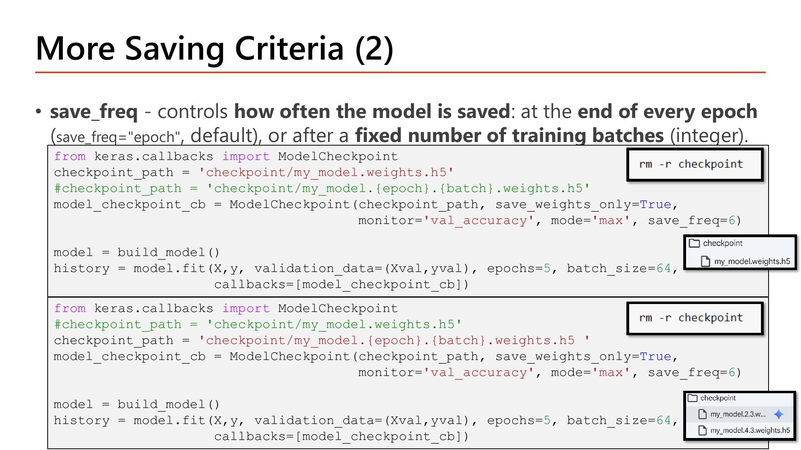
อาร์กิวเมนต์สุดท้ายของ ModelCheckpoint คือ save_freq ซึ่งสไลด์อธิบายว่าควบคุม how often the model is saved: ถ้าใส่ค่า "epoch" (ค่าเริ่มต้น) = เซฟตอนจบทุก epoch; ถ้าใส่จำนวนเต็ม = เซฟทุกๆ N batch ของการเทรน. ความเข้าใจผิดอันดับหนึ่งคือคิดว่า save_freq=6 แปลว่า "ทุก 6 epoch" — ไม่ใช่ มันคือ "ทุก 6 batch" และ batch นับสะสมข้าม epoch.
from keras.callbacks import ModelCheckpoint
checkpoint_path = 'checkpoint/my_model.weights.h5'
#checkpoint_path = 'checkpoint/my_model.{epoch}.{batch}.weights.h5'
model_checkpoint_cb = ModelCheckpoint(checkpoint_path, save_weights_only=True,
monitor='val_accuracy', mode='max', save_freq=6)
model = build_model()
history = model.fit(X, y, validation_data=(Xval, yval), epochs=5, batch_size=64,
callbacks=[model_checkpoint_cb])
from keras.callbacks import ModelCheckpoint
#checkpoint_path = 'checkpoint/my_model.weights.h5'
checkpoint_path = 'checkpoint/my_model.{epoch}.{batch}.weights.h5'
model_checkpoint_cb = ModelCheckpoint(checkpoint_path, save_weights_only=True,
monitor='val_accuracy', mode='max', save_freq=6)
model = build_model()
history = model.fit(X, y, validation_data=(Xval, yval), epochs=5, batch_size=64,
callbacks=[model_checkpoint_cb])| โค้ด | ทำอะไร |
|---|---|
| save_freq=6 | เซฟทุกครั้งที่เทรนครบ 6 batch (ไม่ใช่ epoch). ถ้าอยากได้พฤติกรรมเดิมให้ใส่ save_freq='epoch' |
บล็อกที่ 1: 'checkpoint/my_model.weights.h5' | ชื่อไฟล์คงที่ ⇒ การเซฟครั้งที่สองเขียนทับครั้งแรก ⇒ เหลือไฟล์เดียวเสมอ (ตรงกับแผงไฟล์ในสไลด์ที่โชว์ไฟล์เดียว) |
บล็อกที่ 2: 'checkpoint/my_model.{epoch}.{batch}.weights.h5' | ใส่ตัวแปรในชื่อไฟล์. Keras แทน {epoch} ด้วยเลข epoch (เริ่มนับ 1) และ {batch} ด้วยเลข batch ภายใน epoch ⇒ ได้ไฟล์แยกกันหลายไฟล์ |
| monitor='val_accuracy', mode='max' | ยังใส่ไว้ แต่ไม่มีผลในโค้ดชุดนี้เพราะไม่ได้ตั้ง save_best_only=True — เป็นกับดักที่ดีสำหรับข้อสอบ: มี monitor ไม่ได้แปลว่าเลือกเซฟเฉพาะตัวที่ดี |
| #checkpoint_path = ... | บรรทัดที่ถูก comment ไว้ สไลด์ใช้สลับไปมาเพื่อเทียบสองกรณี |
save_freq=6, epochs=5, batch_size=64 จะได้ไฟล์อะไรบ้างmy_model.{epoch}.{batch}.weights.h5เลขสะสมไล่แบบนี้: batch ที่ 1, 2, 3 = epoch 1; ที่ 4, 5, 6 = epoch 2; ที่ 7, 8, 9 = epoch 3; ที่ 10, 11, 12 = epoch 4; ที่ 13, 14, 15 = epoch 5
ได้ 2 ไฟล์: my_model.2.3.weights.h5 และ my_model.4.3.weights.h5 — ตรงกับผล ls ที่สไลด์โชว์ไว้ในกรอบขวาล่างเป๊ะ. บทเรียน: การเซฟไม่จำเป็นต้องตรงกับขอบ epoch มันตรงก็ต่อเมื่อ save_freq หารด้วยจำนวน batch ต่อ epoch ลงตัวพอดี (ที่นี่ 6 ÷ 3 = 2 ลงตัว จึงบังเอิญตกที่ batch สุดท้ายเสมอ).
save_freq เป็น 4 จะได้ไฟล์อะไรsave_freq=4my_model.2.1, my_model.3.2, my_model.4.3 — คราวนี้จุดเซฟ "เลื่อน" ไปเรื่อยๆ ภายใน epoch เพราะ 4 หาร 3 ไม่ลงตัว. ถ้าอยากได้ทุก epoch พอดีต้องตั้ง save_freq=3 (หรือใช้ 'epoch' ไปเลย ซึ่งปลอดภัยกว่าเพราะไม่ต้องคำนวณเอง).
save_best_only ตอบข้อ 2, save_freq เป็นตัวเลขตอบข้อ 1 สำหรับ epoch ที่ยาวมากๆ.monitor='val_loss' แต่ลืมเปลี่ยน mode จาก 'max' เป็น 'min' ⇒ เซฟเฉพาะตอน loss สูงสุด = ได้โมเดลแย่ที่สุด. ใช้ชื่อไฟล์คงที่กับ save_freq เป็นตัวเลข ⇒ ไฟล์ถูกเขียนทับ เหลือแค่จุดเซฟสุดท้าย. ใส่ {epoch}.{batch} ⇒ ได้หลายไฟล์ แต่กินดิสก์ (ถ้าโมเดลใหญ่ต้องระวัง)..keras เทรนต่อได้อย่างราบรื่นแต่ .weights.h5 ต้องเริ่ม momentum ใหม่; และ §4 (BackupAndRestore) คือกรณี "กันของหาย" แบบเต็มรูปแบบ.batch_size=64, epochs=5, ModelCheckpoint('my_model.{epoch}.{batch}.weights.h5', save_freq=6) จะได้ไฟล์ใดบ้าง?val_loss ต่ำที่สุด บรรทัดใดถูกต้อง?save_weights/load_weights และต้องสร้างโมเดลก่อนโหลด. กับดัก: ตัวเลือกที่บอกว่า load_weights สร้างโมเดลให้เองได้model.save('x.keras') / load_model ได้ทั้งโครงสร้างและ optimizer. กับดัก: สลับนามสกุล .keras กับ .weights.h5save_weights_only (default False = เซฟทั้งโมเดล)filepath เป็นอาร์กิวเมนต์ตัวแรก; save_best_only ต้องเป็น True จึงจะเลือกเซฟตัวดีที่สุด; mode ต้องสอดคล้องกับ monitor (val_accuracy→'max', val_loss→'min', default 'auto'); save_freq เป็นจำนวนเต็มนับเป็น batch สะสม ไม่ใช่ epoch; รูปแบบชื่อไฟล์ {epoch}/{batch} ต้องอยู่ในสตริง pathปัญหาก่อน: ModelCheckpoint เก็บ "ของดี" ไว้ให้ก็จริง แต่ถ้า Colab ตัดการเชื่อมต่อตอน epoch 27 จาก 50 ไฟล์ที่มีคือ weight ล้วนๆ — เราไม่รู้ว่าเทรนไปถึง epoch ไหนแล้ว, ไม่มี momentum ของ optimizer, และถ้าสั่ง fit ใหม่มันจะเริ่มนับ epoch 1 ใหม่หมด. สิ่งที่ต้องการคือการ "หยุดชั่วคราวแล้วเล่นต่อ" ไม่ใช่ "เก็บผลงาน".
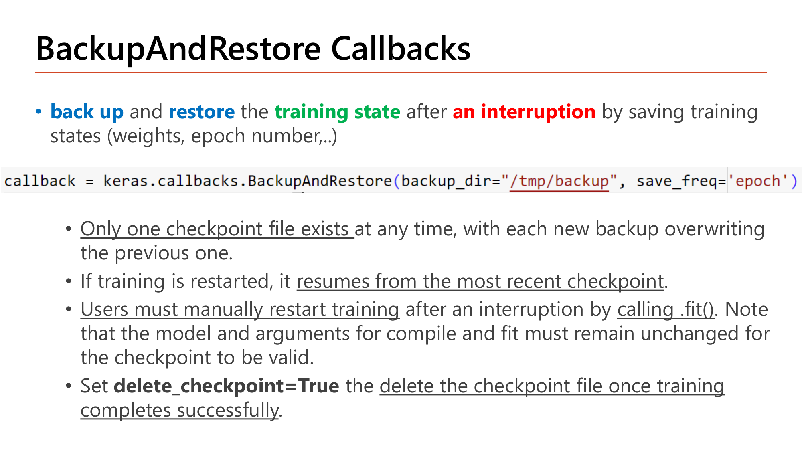
ประโยคที่ทำสีไว้คือคำจำกัดความ: callback นี้ back up and restore the training state after an interruption โดยเซฟ training state ซึ่งสไลด์วงเล็บบอกไว้ว่าประกอบด้วย weights, epoch number และอื่นๆ. คำว่า training state ตรงนี้คือคำที่แยกมันออกจาก ModelCheckpoint ทั้งหมด: ModelCheckpoint เก็บ "ผลงาน" (โมเดลเอาไปใช้งาน) แต่ BackupAndRestore เก็บ "บุ๊กมาร์ก" (เล่มเดิม หน้าเดิม).
callback = keras.callbacks.BackupAndRestore(backup_dir="/tmp/backup", save_freq='epoch')| โค้ด | ทำอะไร |
|---|---|
| keras.callbacks.BackupAndRestore(...) | สร้าง callback. ไม่ต้อง import แยกถ้าเรียกผ่าน keras.callbacks. ตรงๆ |
| backup_dir="/tmp/backup" | อาร์กิวเมนต์บังคับ — โฟลเดอร์เก็บสถานะ. ต้องใช้โฟลเดอร์ที่ไม่ได้ใช้ทำอย่างอื่น เพราะ Keras จัดการไฟล์ในนั้นเอง |
| save_freq='epoch' | สำรองทุกจบ epoch (ค่าเริ่มต้น). ใส่จำนวนเต็มได้เหมือน ModelCheckpoint เพื่อสำรองถี่ขึ้นเป็นระดับ batch |
| (อาร์กิวเมนต์ที่สไลด์พูดถึงแต่ไม่ได้เขียนในโค้ด) delete_checkpoint=True | ลบไฟล์สำรองทิ้งเมื่อเทรนจบสำเร็จ จะได้ไม่ค้างไปกวนการเทรนรอบถัดไป |
ผลลัพธ์ที่คาด: เมื่อการเทรนถูกขัดจังหวะแล้วเรียก fit ใหม่ด้วยอาร์กิวเมนต์ชุดเดิม จำนวน epoch ที่รันจริงจะน้อยกว่าที่สั่ง — ในสคริปต์ที่รันในคาบ (สั่ง epochs=10 แต่ถูกขัดที่ epoch index 4) len(history.history['loss']) พิมพ์ออกมาเป็น 6.
สไลด์ยังระบุกติกาอีก 4 ข้อที่ต้องจำ เพราะมันคือจุดที่คนใช้ผิดกันบ่อย:
| กติกาจากสไลด์ | เหตุผล/ผลที่ตามมา |
|---|---|
| Only one checkpoint file exists at any time — แต่ละ backup ใหม่เขียนทับอันเก่า | เราต้องการแค่ "จุดล่าสุด" ไม่ใช่ประวัติทั้งหมด จึงไม่เปลืองดิสก์ (ต่างจาก ModelCheckpoint ที่ใส่ {epoch} แล้วได้หลายไฟล์) |
| If training is restarted, it resumes from the most recent checkpoint | ไม่เริ่ม epoch 1 ใหม่ — เลข epoch ที่ค้างไว้ถูกอ่านกลับมาด้วย |
Users must manually restart training by calling .fit() | callback ไม่ได้ "รีสตาร์ตให้เอง" เราต้องสั่งรันใหม่เอง มันแค่จำได้ว่าค้างไว้ตรงไหน |
| model และอาร์กิวเมนต์ของ compile/fit ต้องเหมือนเดิม (must remain unchanged) | ถ้าเปลี่ยนโครงสร้างหรือ optimizer ระหว่างทาง สถานะที่เก็บไว้จะเข้ากันไม่ได้ ⇒ checkpoint ใช้ไม่ได้ |
fit ใหม่ จะรันกี่ epochepochs=10, สำรองทุก epoch, ถูกขัดจังหวะ (raise error) ตอนเริ่ม epoch ที่ index = 4 โดย index นับจาก 0index 0, 1, 2, 3 คือ epoch ที่ทำจบไปแล้ว = 4 epoch. index 4 คือ epoch ที่ห้าซึ่งยังไม่ทันเริ่ม
$$\text{เสร็จแล้ว} = 4,\qquad \text{backup ล่าสุดชี้ที่ index } 4$$fit(..., epochs=10) อีกครั้งด้วยอาร์กิวเมนต์เดิมcallback อ่านไฟล์สำรอง เห็นว่าค้างที่ index 4 จึงตั้งต้นที่ index 4 แทนที่จะเป็น 0
การเทรนครั้งที่สองไม่ใช่ 10 epoch แต่รันแค่ 6 epoch ⇒ len(history.history['loss']) = 6 ตรงกับผลที่พิมพ์ในคาบ. ข้อควรระวังสำหรับข้อสอบ: เลขที่สั่งใน epochs= คือ "เป้าหมายรวม" ไม่ใช่ "จำนวนที่จะรันเพิ่ม" — ถ้าอยากเทรนต่ออีก 10 epoch จริงๆ ต้องใส่ epochs=14.
fit รอบสองด้วยโมเดลหรืออาร์กิวเมนต์ compile/fit ที่ต่างไป checkpoint จะใช้ไม่ได้ (สไลด์เน้นคำว่า "must remain unchanged"). ถ้าตั้ง delete_checkpoint=True ไฟล์ถูกลบเมื่อเทรนจบสำเร็จ — ถ้าไม่ลบแล้วรันการทดลองใหม่ในโฟลเดอร์เดิม Keras จะนึกว่าเป็นการเทรนที่ค้างอยู่ แล้วข้าม epoch ไปดื้อๆ ซึ่งเป็นบั๊กที่หาสาเหตุยากมาก.save_best_only) เก็บผลงานที่ดีที่สุด, EarlyStopping (§2) ตัดสินว่าพอเมื่อไร. ทั้งสามตัวใส่ใน list เดียวกันได้เลย.epochs=10 พร้อม BackupAndRestore (save_freq='epoch') แต่ถูกขัดจังหวะเมื่อเริ่ม epoch index 4 จากนั้นเรียก fit(..., epochs=10) ซ้ำด้วยอาร์กิวเมนต์เดิม จะรันกี่ epoch?save_best_only) หรือใช้หยุดการเทรน (นั่นคือ EarlyStopping)backup_dir เป็นอาร์กิวเมนต์บังคับ; save_freq='epoch' เป็นค่าเริ่มต้น; delete_checkpoint=True ลบไฟล์เมื่อเทรนจบสำเร็จ; และหลังถูกขัด ผู้ใช้ต้องเรียก .fit() เอง โดยอาร์กิวเมนต์ทุกตัวต้องเหมือนเดิมปัญหาก่อน: learning rate \(\alpha\) ในสูตรอัปเดต \(\theta := \theta - \alpha\,\nabla J\) (Lesson 1) คือ "ขนาดก้าว". ช่วงต้นเราอยู่ไกลจากจุดต่ำสุดมาก อยากก้าวใหญ่เพื่อเข้าใกล้เร็วๆ; ช่วงท้ายเราอยู่ใกล้ก้นชามแล้ว ก้าวใหญ่จะกระโดดข้ามไปมาไม่ลงสักที. ค่าเดียวจึงไม่เหมาะกับทั้งสองช่วง — แต่ compile() ให้เราตั้งได้ครั้งเดียวตอนเริ่ม. callback สองตัวนี้คือทางออก.
(1) floor คือการปัดลง เขียนแทนด้วย \(\lfloor\ \rfloor\) — ตัดเศษทิ้งเสมอ ไม่ใช่ปัดใกล้สุด: \(\lfloor 2.9 \rfloor = 2\), \(\lfloor 0.5 \rfloor = 0\), \(\lfloor 3.0 \rfloor = 3\). ใน numpy คือ np.floor.
(2) เลขยกกำลังของเลขน้อยกว่า 1 จะ "หด": \(0.9^0 = 1\) (อะไรยกกำลังศูนย์ก็ได้ 1), \(0.9^1 = 0.9\), \(0.9^2 = 0.81\), \(0.9^3 = 0.729\). ยิ่งเลขชี้กำลังโต ค่ายิ่งเล็กลงแบบทวีคูณ. นี่คือเหตุผลที่คนใช้ \(r^{k}\) เป็น "ตัวลดทอน".
(3) ใน Python ฟังก์ชันเป็น "ค่า" ที่ส่งต่อได้ — เขียน f(3) คือเรียกฟังก์ชัน แต่เขียน f เฉยๆ คือตัวฟังก์ชันเอง. ดังนั้น LearningRateScheduler(lr_function) (ไม่มีวงเล็บหลัง lr_function) คือการยื่น "สูตร" ให้ Keras เก็บไว้ แล้ว Keras จะเป็นคนเรียก lr_function(epoch, lr) เองทุกต้น epoch. ถ้าเผลอเขียน LearningRateScheduler(lr_function()) จะกลายเป็นการเรียกทันทีแล้วส่งผลลัพธ์ (ตัวเลข) ไปแทน ⇒ error.
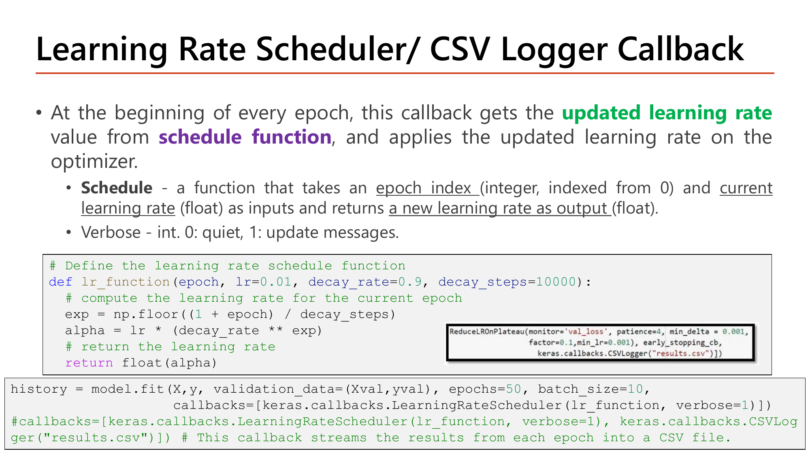
สไลด์อธิบายกลไกไว้เป็นประโยคเดียว: ที่ต้นของทุก epoch callback จะไปเอา updated learning rate value from schedule function แล้วเอาค่านั้นไปใส่ให้ optimizer. สองคำนี้บอกทุกอย่าง — (ก) updated คือค่าใหม่ ไม่ใช่ค่าเดิม; (ข) มันมาจาก schedule function ที่เราเขียนเอง Keras ไม่ได้คิดสูตรให้. และสไลด์ระบุสเปกของฟังก์ชันนั้นไว้ชัด: รับ epoch index (จำนวนเต็ม เริ่มจาก 0) กับ current learning rate (ทศนิยม) แล้วคืน a new learning rate as output (ทศนิยม). อีกอาร์กิวเมนต์คือ Verbose ซึ่งเป็น int: 0 = เงียบ, 1 = พิมพ์ข้อความบอกทุกครั้งที่เปลี่ยนค่า.
# Define the learning rate schedule function
def lr_function(epoch, lr=0.01, decay_rate=0.9, decay_steps=10000):
# compute the learning rate for the current epoch
exp = np.floor((1 + epoch) / decay_steps)
alpha = lr * (decay_rate ** exp)
# return the learning rate
return float(alpha)
history = model.fit(X, y, validation_data=(Xval, yval), epochs=50, batch_size=10,
callbacks=[keras.callbacks.LearningRateScheduler(lr_function, verbose=1)])
# callbacks=[keras.callbacks.LearningRateScheduler(lr_function, verbose=1),
# keras.callbacks.CSVLogger("results.csv")])
# This callback streams the results from each epoch into a CSV file.| โค้ด | ทำอะไร |
|---|---|
| def lr_function(epoch, lr=0.01, decay_rate=0.9, decay_steps=10000): | พารามิเตอร์สองตัวแรกต้องเรียงแบบนี้เท่านั้น (epoch แล้วตามด้วย learning rate ปัจจุบัน) เพราะ Keras ส่งมาตามตำแหน่ง. ตัวที่ 3–4 เป็นค่าตั้งต้นของเราเอง Keras ไม่รู้จัก |
| lr=0.01 (ค่า default) | กับดักใหญ่: ค่านี้จะถูกใช้ก็ต่อเมื่อไม่มีใครส่งค่ามา — แต่ Keras ส่ง learning rate ปัจจุบันมาเสมอ ดังนั้น 0.01 นี้ไม่เคยถูกใช้เลย |
| exp = np.floor((1 + epoch) / decay_steps) | คำนวณ "ชั้นของการลดทอน". 1 + epoch ทำให้ epoch index 0 กลายเป็น 1 (นับแบบมนุษย์) แล้วหารด้วย decay_steps ปัดลง ⇒ ได้เลขจำนวนเต็มที่เพิ่มขึ้นทุกๆ decay_steps epoch |
| alpha = lr * (decay_rate ** exp) | ** คือยกกำลังใน Python. เอา learning rate ที่ Keras เพิ่งส่งมา คูณตัวลดทอน |
| return float(alpha) | ต้องคืนเป็น float ธรรมดา (ไม่ใช่ numpy array) ไม่งั้น Keras อาจบ่น. np.floor คืน numpy float จึงต้องแปลงอีกที |
| LearningRateScheduler(lr_function, verbose=1) | ส่งชื่อฟังก์ชันเปล่าๆ ไม่มีวงเล็บ. verbose=1 ทำให้พิมพ์บรรทัด "Epoch N: LearningRateScheduler setting learning rate to ..." ทุก epoch |
| keras.callbacks.CSVLogger("results.csv") | (บรรทัดที่ comment ไว้) เพิ่ม callback อีกตัวใน list เดียวกัน — เขียนตัวเลข logs ของทุก epoch ต่อท้ายไฟล์ csv ตามที่คอมเมนต์อธิบายว่า streams the results from each epoch into a CSV file |
| batch_size=10 | 150 หาร 10 ได้ 15 batch ต่อ epoch — ถี่กว่าตัวอย่างก่อนหน้า แต่ไม่กระทบ scheduler เพราะมันทำงานระดับ epoch |
เขียนสูตรเป็นคณิตศาสตร์ (ให้ \(\alpha\) = learning rate ปัจจุบันที่ Keras ส่งเข้ามา, \(r\) = decay_rate, \(s\) = decay_steps, \(e\) = epoch index เริ่มที่ 0):
เอา learning rate ปัจจุบันมาคูณด้วย \(r\) ยกกำลัง "จำนวนชั้น" โดยชั้นจะเพิ่มขึ้น 1 ทุกๆ \(s\) epoch
Adam(learning_rate=0.03) ⇒ ค่าเริ่มต้นคือ 0.03. สำคัญ: Keras ส่ง learning rate ปัจจุบัน เข้ามาเป็นอาร์กิวเมนต์ตัวที่สองทุกครั้ง (สไลด์เขียนว่า "takes an epoch index and current learning rate as inputs") ดังนั้นค่า default lr=0.01 ในนิยามฟังก์ชันถูกเมินตลอด| epoch index \(e\) | 0 | 1 | 2 | 3 | 4 |
|---|---|---|---|---|---|
| \((1+e)/2\) | 0.5 | 1.0 | 1.5 | 2.0 | 2.5 |
| \(\lfloor (1+e)/2 \rfloor\) | 0 | 1 | 1 | 2 | 2 |
สังเกตว่าเลขชี้กำลังซ้ำกันเป็นคู่ๆ (0, 1, 1, 2, 2, 3, 3, …) เพราะ \(s = 2\)
ไม่ตรงกันตั้งแต่ epoch ที่สาม! เพราะของจริงคูณซ้อนทับของเดิมไปเรื่อยๆ (compounding)
ลำดับจริงที่ Keras พิมพ์ออกมาคือ 0.03, 0.027, 0.0243, 0.019683, 0.015943229… ซึ่งตรงกับข้อความ Epoch 5: LearningRateScheduler setting learning rate to 0.015943229757249357 ในสคริปต์ที่รันในคาบ. และเมื่อเทรนยาวถึง 50 epoch ผลสะสมคือเลขชี้กำลังรวม \(\sum_{e=0}^{49}\lfloor (1+e)/2 \rfloor = 625\) ⇒ learning rate เหลือ \(0.03 \times 0.9^{625} \approx 7.56\times10^{-31}\) (log ของจริงพิมพ์ learning_rate: 7.5629e-31) และ val_loss ค้างนิ่งที่ 0.6549 ตั้งแต่ราว epoch 44 เป็นต้นไป — โมเดลหยุดเรียนรู้ไปแล้ว.
alpha = lr * decay_rate**exp จึงคูณต่อจากค่าที่ลดแล้วของ epoch ก่อน ไม่ใช่คิดจากค่าตั้งต้นใหม่ทุกครั้ง. ถ้าเจตนาคือ "ลดจากค่าตั้งต้นเป็นขั้นๆ" ต้องเก็บค่าเริ่มต้นไว้นอกฟังก์ชัน เช่น return float(0.03 * 0.9**exp).decay_steps=10000 ซึ่งทำให้ \(\lfloor (1+e)/10000 \rfloor = 0\) สำหรับทุก epoch ที่น้อยกว่า 9,999 ⇒ \(0.9^0 = 1\) ⇒ learning rate ไม่เปลี่ยนเลยตลอด 50 epoch (สูตรทำงาน แต่ไม่มีผล). พอเปลี่ยนเป็น \(s=2\) เลขชี้กำลังโตเร็วและคูณซ้อนกันจน learning rate ดิ่งถึง \(10^{-31}\) — สองสุดขั้วนี้เกิดจากการแตะตัวเลขตัวเดียว.ข้อเสียของ 5.1 คือเราต้องเดาล่วงหน้าว่าควรลดตอน epoch ไหน ทั้งที่ยังไม่เห็นด้วยซ้ำว่าโมเดลจะติดขัดตรงไหน. ReduceLROnPlateau พลิกตรรกะ: ไม่ลดตามตารางเวลา แต่ลดเมื่อวัดได้ว่าไม่คืบหน้าแล้ว — ใช้เกณฑ์เดียวกับ EarlyStopping เป๊ะ (monitor, patience, min_delta) ต่างกันแค่ว่าเมื่อครบเงื่อนไขแล้ว EarlyStopping "หยุด" ส่วนตัวนี้ "ลด learning rate แล้วไปต่อ".
ReduceLROnPlateau(monitor='val_loss', patience=4, min_delta=0.001,
factor=0.1, min_lr=0.001), early_stopping_cb,
keras.callbacks.CSVLogger("results.csv")])| โค้ด | ทำอะไร |
|---|---|
| monitor='val_loss' | ค่าที่เฝ้าดู เหมือน EarlyStopping |
| patience=4 | ถ้า val_loss ไม่ดีขึ้นติดกัน 4 epoch ให้ลด learning rate หนึ่งครั้ง (แล้วตัวนับรีเซ็ต รอดูใหม่) |
| min_delta=0.001 | เกณฑ์ว่า "ดีขึ้นเท่าไรถึงนับ" เหมือน EarlyStopping |
| factor=0.1 | ตัวคูณเวลาลด: learning rate ใหม่ = ค่าเดิม × 0.1 (เหลือ 10%). ต้อง < 1 เสมอ |
| min_lr=0.001 | พื้น — ห้ามลดต่ำกว่านี้ กันไม่ให้เกิดปัญหา learning rate หายวับแบบ 5.1 |
| early_stopping_cb | ใส่ไว้ใน list เดียวกันได้ ทำงานคู่กัน: ลด lr ก่อน ถ้ายังไม่ดีขึ้นอีกจึงค่อยหยุด (จึงควรตั้ง patience ของ EarlyStopping ให้มากกว่าของ ReduceLROnPlateau) |
| CSVLogger("results.csv") | จดทุก epoch ลงไฟล์ csv — คอลัมน์ที่ได้คือ epoch, accuracy, loss, val_accuracy, val_loss และ learning_rate ซึ่งทำให้เห็นจังหวะที่ lr ถูกลดได้ชัดเจน |
ผลลัพธ์ที่คาด: คอลัมน์ learning_rate ในไฟล์ csv จะเป็นขั้นบันได — ในสคริปต์ที่รันในคาบ (เริ่มที่ 0.03) ค่าคงที่ 0.03 จนถึง epoch 9 แล้วกลายเป็น 0.0030 ที่ epoch 10 และ 0.0010 ที่ epoch 14 จากนั้นค้างที่ 0.0010 ยาวจนจบ epoch 50.
กติกาการลดเขียนเป็นสูตรได้สั้นๆ:
$$\alpha_{\text{new}} = \max\!\left(\alpha \times \text{factor},\; \text{min\_lr}\right)$$ลดลงเป็นสัดส่วน แต่ถ้าลดแล้วต่ำกว่าพื้นที่กำหนดไว้ ให้ใช้ค่าพื้นแทน
factor=0.1, min_lr=0.001 เริ่มที่ 0.03 (ตามค่าในสไลด์)0.003 ยังสูงกว่าพื้น จึงใช้ได้ตามปกติ
คราวนี้ 0.0003 ต่ำกว่าพื้น ⇒ ถูกดันขึ้นมาเป็น 0.001
ค้างอยู่ที่พื้นตลอดไป ไม่ว่าจะติดแหง็กอีกกี่ครั้ง
ลำดับคือ 0.03 → 0.003 → 0.001 → 0.001 → … ตรงกับคอลัมน์ learning_rate ในไฟล์ csv ของการเทรนจริง (0.0300 ที่ epoch 1–9, 0.0030 ที่ epoch 10–13, 0.0010 ตั้งแต่ epoch 14). สังเกตความต่างจาก 5.1: ที่นี่ min_lr ทำหน้าที่เป็นตาข่ายกันตก ทำให้ learning rate ไม่มีวันไหลลงไปถึง \(10^{-31}\).
สรุปเทียบสองตัวให้ชัด เพราะข้อสอบชอบถามว่า "ควรใช้ตัวไหนเมื่อไร":
LearningRateScheduler | ReduceLROnPlateau | |
|---|---|---|
| ตัดสินใจจาก | เลข epoch เท่านั้น (ตารางเวลาที่ตั้งไว้ล่วงหน้า) | ค่า monitor จริงที่วัดได้ (ปฏิกิริยาต่อผล) |
| ต้องเขียนสูตรเองไหม | ต้อง — เราเขียน lr_function | ไม่ต้อง — แค่ตั้ง factor, patience, min_lr |
| ความเสี่ยง | ลดเร็ว/ช้าเกินไปโดยไม่รู้ตัว, คูณซ้อนจนเป็นศูนย์ | ถ้า patience สั้นเกิน อาจลดตั้งแต่ยังแค่กระเพื่อม |
| มีพื้นกันตกไหม | ไม่มี (ต้องเขียนเอง) | มี — min_lr |
ส่วน CSVLogger นั้นง่ายที่สุดในบท: CSVLogger("results.csv") รับแค่ชื่อไฟล์ แล้วเขียน logs ของทุก epoch ต่อท้ายลงไฟล์ — ไม่มีการคำนวณ ไม่มีการตัดสินใจ ไม่กระทบการเทรนใดๆ ทั้งสิ้น. ประโยชน์คือเอาไฟล์ csv ไปเปิดใน pandas/Excel เพื่อวาดกราฟเทียบหลายการทดลอง โดยไม่ต้องเก็บ history ไว้ในหน่วยความจำ.
lr*decay_rate**floor((1+epoch)/decay_steps) ด้วย decay_rate=0.9, decay_steps=2 และ Keras ส่ง lr ปัจจุบันเข้าฟังก์ชัน learning rate ของ epoch index 3 คือเท่าใด?ReduceLROnPlateau(patience=4, factor=0.1, min_lr=0.001) เริ่มที่ lr = 0.03 หลังติดแหง็กครบ 3 รอบ (ลดครั้งที่ 1, 2, 3) learning rate จะเป็นเท่าใด?logsLearningRateScheduler(lr_function, verbose=1) ส่งชื่อฟังก์ชันไม่มีวงเล็บ; verbose เป็น int (0 เงียบ / 1 พิมพ์); ReduceLROnPlateau ต้องมี factor (< 1) และ min_lr เป็นพื้น ส่วน patience/min_delta มีความหมายเดียวกับ EarlyStopping; CSVLogger รับชื่อไฟล์เป็นอาร์กิวเมนต์แรกalpha = lr * decay_rate ** exp คูณซ้อนทุก epoch เพราะ lr คือค่าปัจจุบัน ไม่ใช่ค่าตั้งต้น — ถ้าโจทย์ถาม lr ที่ epoch index 3 คำตอบคือ 0.019683 ไม่ใช่ 0.0243ปัญหาก่อน: สิ่งเดียวที่เราเห็นระหว่างเทรนคือตัวเลขสี่ตัววิ่งผ่านหน้าจอ (loss, accuracy, val_loss, val_accuracy). ถ้าโมเดลเทรนไม่ขึ้น ตัวเลขพวกนี้บอกแค่ว่า "ไม่ขึ้น" แต่ไม่บอกทำไม. คำถามอย่าง "weight ของ layer แรกขยับบ้างไหม" หรือ "การกระจายของ weight เปลี่ยนไปอย่างไรตลอด 20 epoch" ตอบไม่ได้เลยจากตัวเลขสี่ตัวนั้น. TensorBoard คือเครื่องมือที่ทำให้เห็นข้างใน.
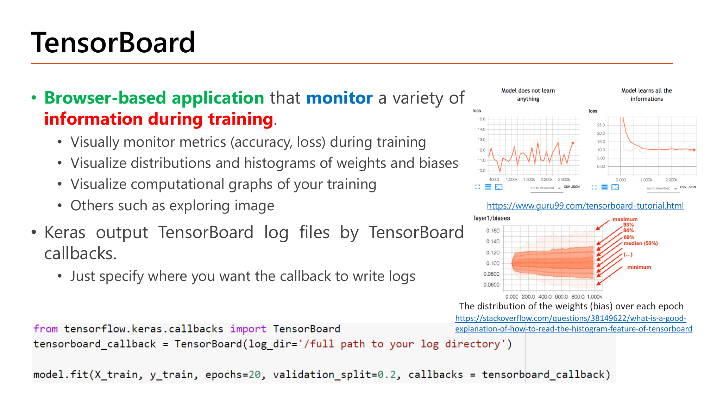
อาจารย์นิยาม TensorBoard ว่าเป็น Browser-based application that monitor a variety of information during training. คำว่า browser-based สำคัญกว่าที่คิด: มันไม่ใช่ฟังก์ชัน Python ที่คืนค่ากลับมา แต่เป็นเว็บแอปแยกต่างหาก ที่ไปอ่าน "ไฟล์ log" ที่ Keras เขียนทิ้งไว้ — เพราะงั้นขั้นตอนจึงมีสองฝั่งเสมอ: ฝั่ง Keras เขียน log (ผ่าน callback) กับฝั่งเราเปิดเว็บอ่าน log. สไลด์สรุปสิ่งที่ดูได้ไว้ 4 ข้อ: ดู metric (accuracy, loss) ระหว่างเทรน, ดูการกระจายและ histogram ของ weight กับ bias, ดู computational graph ของโมเดล, และอื่นๆ เช่นสำรวจรูปภาพ. แล้วปิดท้ายว่า Keras ผลิตไฟล์ log พวกนี้ผ่าน TensorBoard callback โดยเรา "แค่ระบุว่าอยากให้เขียน log ไว้ที่ไหน".
from tensorflow.keras.callbacks import TensorBoard
tensorboard_callback = TensorBoard(log_dir='/full path to your log directory')
model.fit(X_train, y_train, epochs=20, validation_split=0.2, callbacks = tensorboard_callback)| โค้ด | ทำอะไร |
|---|---|
| from tensorflow.keras.callbacks import TensorBoard | นำเข้าคลาส callback (ไม่ใช่ตัวโปรแกรม TensorBoard — ตัวโปรแกรมรันแยก) |
| TensorBoard(log_dir='...') | อาร์กิวเมนต์เดียวที่จำเป็นคือ log_dir = โฟลเดอร์ปลายทางของไฟล์ log |
| validation_split=0.2 | แบ่ง 20% ท้ายของ X_train ไปเป็น validation อัตโนมัติ (ต่างจาก validation_data ที่เราส่งชุดแยกมาเอง) ⇒ TensorBoard จะมีเส้น train กับ validation ให้เทียบ |
| callbacks = tensorboard_callback | ในสไลด์เขียนไม่ใส่ list ก็ทำงานได้ แต่สไตล์ที่ถูกต้องคือ callbacks=[tensorboard_callback] |
ผลลัพธ์ที่คาด: ไม่มีอะไรพิมพ์เพิ่มบนหน้าจอนอกจาก progress bar ปกติ — ผลลัพธ์คือไฟล์ในโฟลเดอร์ log_dir (ชื่อแบบ events.out.tfevents... แยกเป็นโฟลเดอร์ย่อย train/ และ validation/) ที่ต้องเปิดด้วยเว็บ TensorBoard ถึงจะเห็น.
อ่านกราฟ loss สองแบบที่สไลด์เอามาเทียบ: แผงที่ชื่อ "Model does not learn anything" มี loss แกว่งอยู่ระหว่างประมาณ 11.0 ถึง 15.0 ตลอดตั้งแต่ step ที่ 400 จนถึง 2,800 โดยค่าเฉลี่ยไม่ลดลงเลย — ขึ้นลงแบบนี้คือ noise ของการสุ่ม batch ไม่ใช่การเรียนรู้. ส่วนแผง "Model learns all the informations" loss เริ่มที่เกิน 25 แล้วดิ่งลงมาราว 10 ภายในประมาณ 1,000 step จากนั้นแบนราบ — รูปตัว L แบบนี้คือหน้าตาปกติของการเรียนรู้ที่สำเร็จ (ลดเร็วตอนต้น แล้วค่อยๆ อิ่มตัว). กฎการวินิจฉัย: ถ้ากราฟของคุณหน้าตาแบบแรก ให้สงสัยสามอย่างตามลำดับ — learning rate (ใหญ่/เล็กเกิน), การ initialize weight, และ vanishing gradient (§7) — ก่อนจะไปโทษว่าข้อมูลไม่พอ.
อ่าน histogram ของ weight/bias: แผง layer1/biases ในสไลด์มีป้ายกำกับเส้นขอบไว้ว่า maximum, 93%, 84%, 69%, median (50%) และ minimum. ความหมายคือแต่ละ epoch (แกนนอนไล่จาก 0 ถึง 1,000 กว่า) เราเอา bias ทั้งหมดใน layer นั้นมาเรียงจากน้อยไปมาก แล้ววาดว่า "ค่ากลางอยู่ตรงไหน (median) และค่าที่กระจายออกไปอยู่แค่ไหน (93%, maximum)". ในภาพนี้แถบเริ่มจากแคบๆ แถว 0.06 แล้วบานออกครอบคลุมช่วงประมาณ 0.06 ถึง 0.16 เมื่อ epoch เพิ่มขึ้น — บานออก = weight กำลังเคลื่อนที่ = กำลังเรียนรู้; ถ้าแถบแบนนิ่งเป็นเส้นตรงแปลว่า weight แทบไม่ถูกอัปเดตเลย ซึ่งเป็นเบาะแสของ vanishing gradient หรือ learning rate ที่เล็กเกินไป. เครื่องมือชิ้นนี้คือสิ่งที่ §7 จะใช้ทั้งหมด.
ถ้าเรียงตัวเลขจากน้อยไปมาก "เปอร์เซ็นไทล์ที่ 50" (median) คือค่าที่อยู่ตรงกลาง — มีครึ่งหนึ่งน้อยกว่ามัน อีกครึ่งมากกว่ามัน. "เปอร์เซ็นไทล์ที่ 84" คือค่าที่มี 84% ของข้อมูลน้อยกว่ามัน.
ลองกับ 5 ตัวเลข: bias ของ layer หนึ่ง = \(-0.2,\ -0.1,\ 0.0,\ 0.1,\ 0.3\). เรียงแล้ว median = 0.0 (ตัวกลาง), minimum = −0.2, maximum = 0.3 ⇒ ความกว้างของแถบ = \(0.3 - (-0.2) = 0.5\). ถ้า epoch ถัดไปกลายเป็น \(-0.5, -0.2, 0.0, 0.25, 0.6\) ⇒ ความกว้าง = 1.1 นั่นคือ "แถบบานออก" ที่เราพูดถึง.
TensorBoard วาดแถบแบบนี้ซ้อนกันหลายระดับ (69%, 84%, 93%, max) ทำให้เห็นทั้งการกระจายและทิศทางพร้อมกัน แทนที่จะเห็นแค่ตัวเลขตัวเดียว.
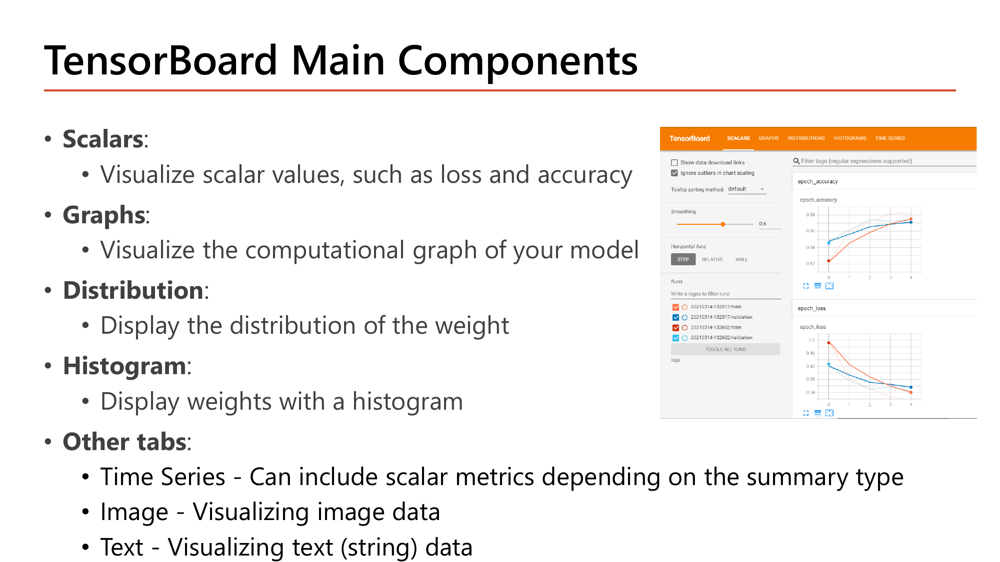
หน้า 12 ไล่ว่าในเว็บ TensorBoard มีแท็บอะไรให้ดูบ้าง จับคู่ "อยากรู้อะไร → ไปแท็บไหน" ได้ดังนี้:
| แท็บ | สไลด์บอกว่าแสดงอะไร | ใช้ตอบคำถามว่า |
|---|---|---|
| Scalars | visualize scalar values เช่น loss และ accuracy | โมเดลเรียนรู้อยู่ไหม? overfit หรือยัง (เทียบเส้น train กับ validation) |
| Graphs | visualize the computational graph ของโมเดล | โครงสร้างที่ Keras สร้างจริงตรงกับที่เราเขียนไหม (layer ต่อกันถูกไหม) |
| Distribution | display the distribution of the weight | weight กระจายตัวอย่างไรในแต่ละ epoch |
| Histogram | display weights with a histogram | เหมือน Distribution แต่เห็นรูปร่างของการแจกแจงชัดกว่า |
| Time Series | รวม scalar metric ได้ ขึ้นกับชนิดของ summary | ดู metric ทั้งหมดในหน้าเดียวแบบไล่ตามเวลา |
| Image / Text | visualizing image data / text (string) data | งานที่ input เป็นรูปหรือข้อความ (ไม่ได้ใช้ในคาบนี้ แต่ต้องรู้ว่ามี) |
ในภาพหน้าจอจริงของสไลด์ แถบ Runs ด้านซ้ายมีสี่รายการที่ชื่อขึ้นต้นด้วย 20210314-132517 และ 20210314-132602 โดยแต่ละอันแยกเป็น /train กับ /validation — นี่คือเหตุผลของการตั้งชื่อโฟลเดอร์ด้วย timestamp ในหน้าถัดไป: ติ๊กเลือกได้ว่าจะเทียบการเทรนรอบไหนกับรอบไหน และกราฟ epoch_accuracy จะวาดทั้งสองเส้นซ้อนกันให้เทียบทันที.
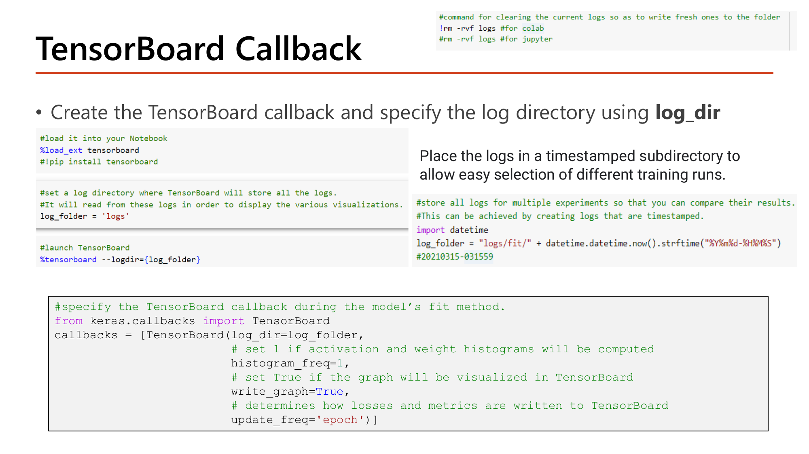
หน้า 13 ให้ขั้นตอนครบทั้งฝั่งเปิดเว็บและฝั่งเขียน log. ฝั่งเปิดเว็บใน notebook คือสามบรรทัดสั้นๆ: %load_ext tensorboard (โหลดส่วนขยาย), log_folder = 'logs' (ตั้งชื่อโฟลเดอร์), %tensorboard --logdir={log_folder} (เปิดหน้าเว็บฝังใน notebook). สไลด์ยังมีคำสั่งล้าง log เก่าไว้ด้วย (!rm -rvf logs สำหรับ Colab, rm -rvf logs สำหรับ Jupyter) เพราะถ้าไม่ล้าง log ของการทดลองเก่าจะปนกับของใหม่ในกราฟเดียวกัน.
# specify the TensorBoard callback during the model's fit method.
from keras.callbacks import TensorBoard
callbacks = [TensorBoard(log_dir=log_folder,
# set 1 if activation and weight histograms will be computed
histogram_freq=1,
# set True if the graph will be visualized in TensorBoard
write_graph=True,
# determines how losses and metrics are written to TensorBoard
update_freq='epoch')]| โค้ด | ทำอะไร |
|---|---|
| log_dir=log_folder | โฟลเดอร์ปลายทาง. ถ้าใส่ชื่อซ้ำกับรอบก่อน กราฟจะปนกัน — จึงนิยมใส่ timestamp (ดูย่อหน้าถัดไป) |
| histogram_freq=1 | คำนวณ histogram ของ activation และ weight ทุก 1 epoch. ค่าเริ่มต้นคือ 0 = ไม่คำนวณเลย ⇒ ถ้าลืมใส่ แท็บ Histograms/Distributions จะว่างเปล่า (เป็นคำถามที่ถามกันบ่อยที่สุด) |
| write_graph=True | เขียนโครงสร้าง computational graph ลง log เพื่อให้แท็บ Graphs มีอะไรแสดง. ถ้าโมเดลใหญ่มาก การปิด (False) ช่วยลดขนาดไฟล์ |
| update_freq='epoch' | เขียน loss/metric ลง log ทุกจบ epoch. ใส่ 'batch' หรือจำนวนเต็มได้ถ้าอยากละเอียดกว่านั้น แต่ไฟล์จะใหญ่และเทรนช้าลง |
| callbacks = [ ... ] | เก็บไว้ในตัวแปรชื่อ callbacks แล้วค่อยส่งเข้า model.fit(..., callbacks=callbacks) ทีหลัง — สไตล์นี้ใช้ในสไลด์หน้า 15, 17, 18 |
ผลลัพธ์ที่คาด: หลังเทรนเสร็จ แท็บ Scalars มีกราฟ epoch_accuracy กับ epoch_loss (อย่างละ 2 เส้น: train/validation), แท็บ Graphs มีผังโมเดล, และแท็บ Histograms มีแผงหนึ่งคู่ต่อ layer (dense_X/bias_0 กับ dense_X/kernel_0) ครบทุก layer.
เรื่องสุดท้ายของหน้า 13 คือการตั้งชื่อโฟลเดอร์แบบมี timestamp: สไลด์เขียน log_folder = "logs/fit/" + datetime.datetime.now().strftime("%Y%m%d-%H%M%S") แล้วยกตัวอย่างผลลัพธ์ว่า 20210315-031559. อ่านรหัสนี้ทีละส่วน: 2021 ปี, 03 เดือนมีนาคม, 15 วันที่, แล้ว 03 ชั่วโมง, 15 นาที, 59 วินาที — รวมเป็น "15 มี.ค. 2021 เวลา 03:15:59". เหตุผลที่ต้องทำคือทุกครั้งที่รันจะได้โฟลเดอร์ใหม่ไม่ซ้ำ ⇒ TensorBoard เห็นเป็นคนละ "run" ⇒ เอามาวาดซ้อนกันเทียบได้ (เหมือนสี่ run ในหน้าจอของหน้า 12) แทนที่จะเขียนทับกันมั่วจนอ่านไม่ออก.
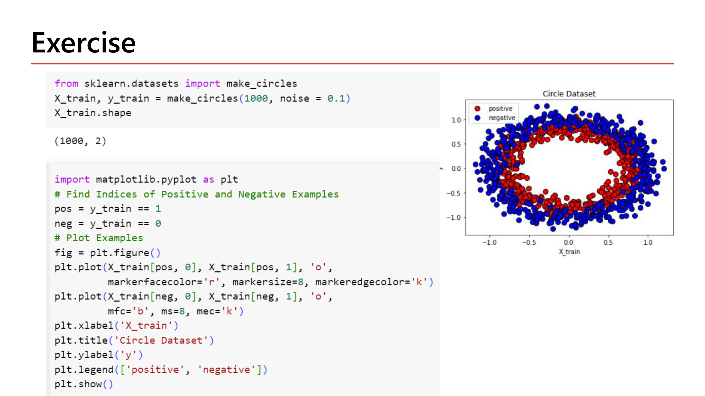
make_circles(1000, noise=0.1) (Lecture6, p.14)หน้า 14 เป็นแบบฝึกหัดที่เตรียมข้อมูลสำหรับการทดลองใน §7. โจทย์คือชุดข้อมูล "วงกลมซ้อนวงกลม": จุดสีแดง (label 1) อยู่วงใน รัศมีประมาณ 0.5 และจุดสีน้ำเงิน (label 0) อยู่วงนอก รัศมีประมาณ 1.0 โดย noise=0.1 ทำให้แต่ละจุดกระเด็นออกจากวงเล็กน้อยจนสองวงเบียดกัน. ความสำคัญของข้อมูลชุดนี้คือเส้นตรงเส้นเดียวแยกมันไม่ได้เลย — ไม่ว่าจะลากเส้นตรงอย่างไรก็จะมีทั้งแดงและน้ำเงินอยู่ทั้งสองฝั่ง — จึงเป็นโจทย์ที่ logistic regression ตัวเดียวทำไม่ได้และต้องมี hidden layer (เหตุผลเดียวกับ XOR ใน Lesson 2).
from sklearn.datasets import make_circles
X_train, y_train = make_circles(1000, noise = 0.1)
X_train.shape
# (1000, 2)
import matplotlib.pyplot as plt
# Find Indices of Positive and Negative Examples
pos = y_train == 1
neg = y_train == 0
# Plot Examples
fig = plt.figure()
plt.plot(X_train[pos, 0], X_train[pos, 1], 'o',
markerfacecolor='r', markersize=8, markeredgecolor='k')
plt.plot(X_train[neg, 0], X_train[neg, 1], 'o',
mfc='b', ms=8, mec='k')
plt.xlabel('X_train')
plt.title('Circle Dataset')
plt.ylabel('y')
plt.legend(['positive', 'negative'])
plt.show()| โค้ด | ทำอะไร |
|---|---|
| make_circles(1000, noise = 0.1) | สร้างข้อมูลจำลอง 1,000 จุด เป็นวงกลมสองวงซ้อนกัน. noise=0.1 = ส่วนเบี่ยงเบนของสัญญาณรบกวนที่เติมลงไป ยิ่งมากสองวงยิ่งปนกัน |
| X_train.shape → (1000, 2) | 1,000 แถว 2 คอลัมน์ = จุดละสองพิกัด (x, y) ⇒ input_dim=2 ในโมเดลของ §7 |
| pos = y_train == 1 | สร้าง boolean mask ยาว 1,000 ช่อง ที่เป็น True ตรงตำแหน่งที่ label = 1 — วิธีมาตรฐานของ numpy ในการ "เลือกเฉพาะแถวที่เข้าเงื่อนไข" |
| X_train[pos, 0], X_train[pos, 1] | เอาคอลัมน์ 0 (แกนนอน) และคอลัมน์ 1 (แกนตั้ง) เฉพาะแถวที่ pos เป็นจริง ⇒ พิกัดของจุดบวกทั้งหมด |
| markerfacecolor='r' / mfc='b' | สีจุด: แดงสำหรับ positive, น้ำเงินสำหรับ negative. mfc/ms/mec เป็นตัวย่อของ markerfacecolor/markersize/markeredgecolor |
| plt.legend(['positive', 'negative']) | ใส่คำอธิบายตามลำดับที่ plt.plot ถูกเรียก — ถ้าสลับลำดับการ plot คำอธิบายจะผิดทันที |
ผลลัพธ์ที่คาด: X_train.shape พิมพ์ (1000, 2) และได้กราฟ scatter ที่จุดแดงกระจุกเป็นวงในกับจุดน้ำเงินเป็นวงนอก ตามภาพในสไลด์.
X_train shape (1000, 2), validation_split=0.2, ไม่ระบุ batch_size (ค่า default ของ Keras = 32)จุดที่พลาดกันบ่อย: validation_split ตัดออกจากข้อมูลที่ส่งเข้ามา ⇒ จำนวนที่ใช้เทรนจริงเหลือ 800 ไม่ใช่ 1,000
25 step ต่อ epoch — ตรงกับ progress bar 25/25 ที่ขึ้นทุก epoch ในสคริปต์ที่รันในคาบ. ตัวเลขนี้ใช้ตรวจความเข้าใจได้ดี: ถ้าเห็น 32/32 แปลว่าลืมหัก validation ออก (1000/32 = 31.25 ⇒ 32).
histogram_freq=1 (default 0) ⇒ ไม่มี histogram ให้ดูเลย ทั้งที่โค้ดไม่ error; ตั้ง update_freq='batch' ⇒ log ละเอียดมากแต่ไฟล์ใหญ่และเทรนช้าลงเพราะต้องเขียนดิสก์ทุก batch; ใช้ log_dir ซ้ำเดิมโดยไม่ล้าง ⇒ กราฟของการทดลองเก่าปนกับของใหม่.bias_0/kernel_0 คือหลักฐานของ vanishing gradient และของ learning rate ที่เล็กเกินไป; และแนวคิด "ดูการกระจายของ weight" คือเรื่องเดียวกับ initialization ใน Lesson 5.modelTensorBoard(log_dir=..., histogram_freq=1, write_graph=True, update_freq='epoch') — จำให้ได้ว่าตัวไหนคุมอะไร โดยเฉพาะ histogram_freq (default 0 = ปิด) และ update_freq ที่รับได้ทั้ง 'epoch', 'batch' หรือจำนวนเต็ม; และการตั้งชื่อโฟลเดอร์ด้วย timestamp เพื่อแยก runทำไมหัวข้อนี้มาอยู่ตรงนี้: Lesson 5 พิสูจน์ด้วยสูตรว่า gradient หดหายหรือระเบิดได้เมื่อ network ลึก แต่ตอนนั้นเรายัง "มองไม่เห็น" มัน. ตอนนี้เรามี TensorBoard แล้ว อาจารย์จึงพาย้อนกลับมาทำการทดลองสามชุดบนข้อมูล Circle ชุดเดียวกัน (หน้า 14) เปลี่ยนทีละอย่างแล้วดู histogram ว่าอะไรเกิดขึ้นกับ weight จริงๆ. นี่คือทักษะ "วินิจฉัยโรค" ที่ข้อสอบชอบถามในรูป "เห็นอาการแบบนี้ สาเหตุคืออะไร".
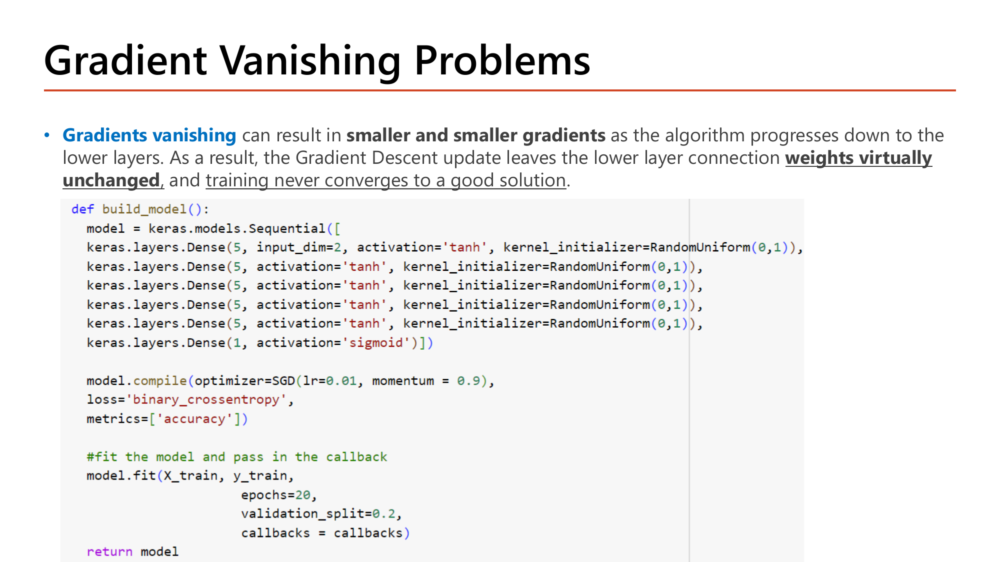
อาจารย์ทำสีคำว่า Gradients vanishing ไว้ แล้วอธิบายต่อว่ามันทำให้ gradient เล็กลงเรื่อยๆ เมื่อไล่ลงไปยัง layer ล่าง ผลคือการอัปเดตแบบ gradient descent ทิ้งให้ weight ของ layer ล่าง virtually unchanged (แทบไม่เปลี่ยน) และ training never converges to a good solution. สองวลีที่ขีดเส้นใต้นี้คือ "อาการ" ที่เราจะไปหาหลักฐานใน TensorBoard.
def build_model():
model = keras.models.Sequential([
keras.layers.Dense(5, input_dim=2, activation='tanh', kernel_initializer=RandomUniform(0,1)),
keras.layers.Dense(5, activation='tanh', kernel_initializer=RandomUniform(0,1)),
keras.layers.Dense(5, activation='tanh', kernel_initializer=RandomUniform(0,1)),
keras.layers.Dense(5, activation='tanh', kernel_initializer=RandomUniform(0,1)),
keras.layers.Dense(5, activation='tanh', kernel_initializer=RandomUniform(0,1)),
keras.layers.Dense(1, activation='sigmoid')])
model.compile(optimizer=SGD(lr=0.01, momentum = 0.9),
loss='binary_crossentropy',
metrics=['accuracy'])
#fit the model and pass in the callback
model.fit(X_train, y_train,
epochs=20,
validation_split=0.2,
callbacks = callbacks)
return model| โค้ด | ทำอะไร |
|---|---|
| Dense(5, input_dim=2, ...) | layer แรกต้องบอกขนาด input (input_dim=2 เพราะข้อมูล Circle มี 2 พิกัด). layer ถัดๆ ไปไม่ต้องบอก Keras อนุมานเอง |
| Dense(5, ...) ซ้ำ 5 ชั้น | network ลึก 5 hidden layer ชั้นละ 5 unit — ลึกพอที่จะเห็นผลของการคูณ gradient ต่อกัน 5 ทอด |
| activation='tanh' | tanh บีบค่าลงช่วง (−1, 1) และอิ่มตัวเมื่อ input ใหญ่ ⇒ ความชันเข้าใกล้ 0 (นี่คือตัวก่อเหตุ) |
| kernel_initializer=RandomUniform(0,1) | ต้นตอที่แท้จริง: สุ่ม weight เริ่มต้นจากช่วง 0 ถึง 1 ⇒ ทุกตัวเป็นบวก ค่าเฉลี่ยราว 0.5 (ตรงข้ามกับหลักการของ Lesson 5 ที่ต้องการค่าเฉลี่ย 0) |
| Dense(1, activation='sigmoid') | output layer สำหรับงาน binary classification — คืนความน่าจะเป็น 0–1 |
| SGD(lr=0.01, momentum = 0.9) | optimizer แบบพื้นฐานพร้อม momentum 0.9 (Lesson 4). ใน Keras รุ่นใหม่ชื่ออาร์กิวเมนต์คือ learning_rate ส่วน lr เป็นชื่อเก่า |
| loss='binary_crossentropy' | loss มาตรฐานของงานสองคลาส (Lesson 1) |
| callbacks = callbacks | ใช้ตัวแปร callbacks ที่สร้างไว้ในหน้า 13 (TensorBoard พร้อม histogram_freq=1) ⇒ ทุกการทดลองในหน้า 15–18 เขียน histogram ลง log หมด |
ผลลัพธ์ที่คาด: เทรน 20 epoch แล้ว accuracy ค้างอยู่แถว 0.50 ตลอด — ในสคริปต์ที่รันในคาบ epoch สุดท้ายได้ accuracy: 0.5163 - loss: 0.6930 - val_accuracy: 0.4800 - val_loss: 0.6948. ตัวเลข 0.5 คือความแม่นยำของการเดาสุ่มในงานสองคลาส และ 0.693 คือ \(\ln 2\) ซึ่งเป็นค่า binary cross-entropy ของโมเดลที่ทำนาย 0.5 ให้ทุกตัวอย่าง — พูดอีกอย่างคือโมเดลไม่ได้เรียนรู้อะไรเลยแม้แต่นิดเดียว.
ทำไมถึงเป็นอย่างนั้น? ตัวการคือบรรทัด kernel_initializer=RandomUniform(0,1). ลองตามตัวเลขดู:
หัวใจอยู่ตรงนี้: เพราะ weight เป็นบวกทั้งหมด พจน์ทั้ง 5 จึงบวกกันเข้าไปเรื่อยๆ ไม่มีตัวลบมาหักล้าง. ถ้า weight มีทั้งบวกและลบคละกัน (เฉลี่ย 0) ผลรวมจะแกว่งอยู่แถว 0 แทน
เข้าใกล้เพดาน 1 แล้ว และ layer ถัดไปจะได้ input ประมาณ 0.98 ทำให้ \(z\) ยิ่งใหญ่ขึ้นอีก — ปัญหาทบตัวเองไปตามความลึก
ความชันสูงสุดของ tanh คือ 1 (ที่ \(z=0\)) แต่ตรงนี้เหลือ 0.0435 = ประมาณ 4% ของค่าสูงสุด
gradient ที่เดินทางถึง layer แรกสุดเหลือขนาดระดับ \(10^{-9}\) เทียบกับตอนออกจาก output. คูณด้วย learning rate 0.01 อีกที การอัปเดตต่อก้าวอยู่ระดับ \(10^{-11}\) — เล็กจน weight "แทบไม่เปลี่ยน" ตรงกับคำที่สไลด์ขีดเส้นใต้ไว้ว่า virtually unchanged. (ตัวเลข 0.9 กับ 0.5 เป็นค่าสมมติเพื่อให้เห็นกลไก ของจริงแต่ละ unit ไม่เท่ากัน แต่ข้อสรุปเชิงขนาด — เล็กลงแบบทวีคูณตามความลึก — ไม่เปลี่ยน.)
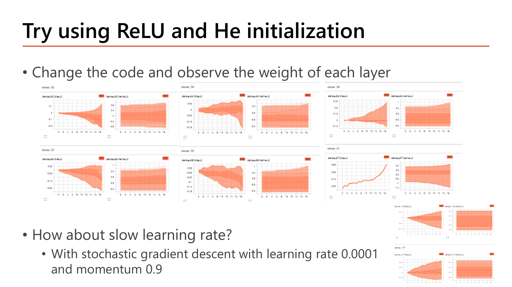
ทางแก้ที่ 1 — เปลี่ยนเป็น ReLU + He initialization. สไลด์สั่งสั้นๆ ว่า "Change the code and observe the weight of each layer" โดยเปลี่ยน activation='tanh' เป็น 'relu' และ kernel_initializer=RandomUniform(0,1) เป็น 'he_normal'. เหตุผลของทั้งสองอย่างมาจาก Lesson 5 ตรงๆ: ReLU มีความชัน 1 คงที่เมื่อ \(z > 0\) จึงไม่มีการอิ่มตัวให้ gradient หาย; ส่วน He initialization สุ่ม weight จากการแจกแจงที่มีค่าเฉลี่ย 0 และ variance \(2/n_{in}\) ⇒ ผลรวม \(z\) ไม่พุ่งไปทางบวกอย่างเดียว.
ผลที่เห็นใน histogram ของแผงบน (layer ชื่อ dense_92 ถึง dense_97): แถบของ bias_0 เริ่มจากศูนย์แล้วบานออกเรื่อยๆ ตลอด 20 epoch จนครอบคลุมช่วงราว \(+0.1\) ถึง \(-0.2\) ส่วนแถบ kernel_0 กว้างประมาณ \(\pm0.8\) และค่อยๆ ขยับ — แปลว่า weight ทุก layer กำลังถูกอัปเดตจริง. ในสคริปต์ที่รันในคาบ โมเดลชุดนี้ (ReLU + He, SGD lr = 0.01, momentum 0.9) เทรน 50 epoch แล้วได้ accuracy: 0.7538 - loss: 0.5176 - val_accuracy: 0.7500 - val_loss: 0.5165 — จาก 0.5163 (เดาสุ่ม) ขึ้นมาเป็น 0.75 เพราะแก้แค่สองคำในโค้ด.
คำถามต่อของสไลด์ — "How about slow learning rate?" อาจารย์ทดลองอีกกรณีหนึ่งคือใช้ SGD ที่ learning rate 0.0001 และ momentum 0.9 แล้วดู histogram ของ dense_116/dense_117 ที่มุมขวาล่าง: แกนตั้งของ bias_0 ไล่แค่ \(+2\times10^{-4}\) ถึง \(-4\times10^{-4}\) (เทียบกับแผงบนที่ไล่ถึง \(\pm0.2\) — เล็กกว่าราว 500–1,000 เท่า) และแถบ kernel_0 เป็นแนวราบแทบไม่ขยับเลยตลอด 20 epoch.
ตรงนี้คือบทเรียนที่ลึกที่สุดของหน้านี้: กราฟ "แบนราบ" เหมือนกัน แต่สาเหตุคนละเรื่อง — กรณีหน้า 15 weight ไม่ขยับเพราะ \(\nabla J \approx 0\) (gradient หาย), กรณีนี้ weight ไม่ขยับเพราะ \(\alpha\) เล็กมาก ทั้งที่ gradient ปกติดี. ดูจากสูตรเดียวกัน \(\Delta\theta = -\alpha\,\nabla J\) จะเห็นว่าผลคูณเล็กได้จากสองทาง. วิธีแยกในทางปฏิบัติ: ถ้าลองเพิ่ม learning rate แล้วแถบเริ่มบานออก แปลว่าเป็นโรคที่สอง; ถ้าเพิ่มแล้วยังนิ่ง (หรือ layer บนขยับแต่ layer ล่างนิ่ง) แปลว่าเป็นโรคแรก.
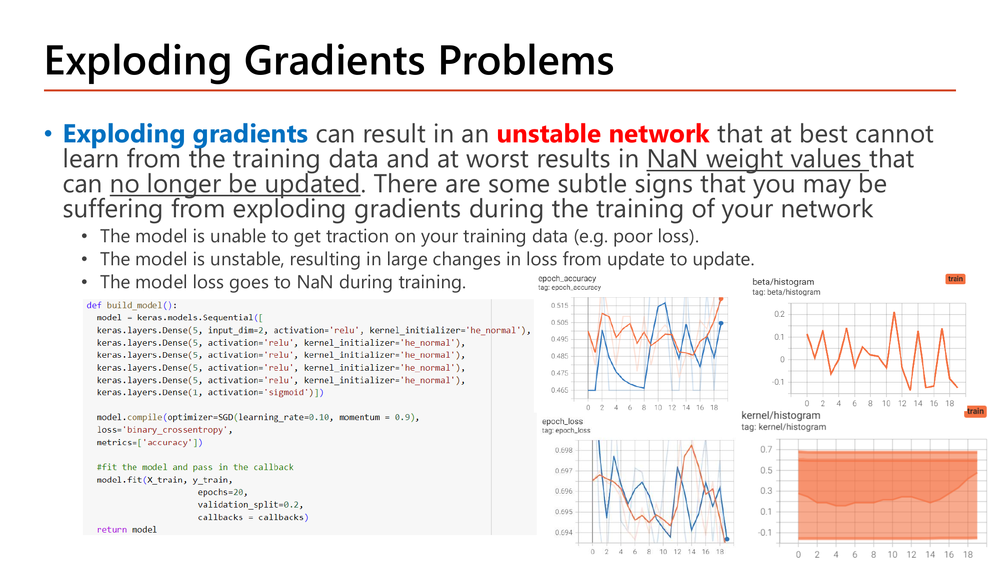
อีกด้านของเหรียญคือ Exploding gradients ซึ่งอาจารย์อธิบายว่าทำให้เกิด unstable network ที่อย่างดีที่สุดก็เรียนรู้จากข้อมูลไม่ได้ และอย่างแย่ที่สุดได้ weight เป็น NaN ที่อัปเดตต่อไม่ได้อีกเลย (NaN = Not a Number ซึ่งเกิดจากตัวเลขล้นเกินขอบเขตที่คอมพิวเตอร์เก็บได้ และเมื่อเป็น NaN แล้วทุกการคำนวณต่อจากนั้นก็เป็น NaN หมด). สไลด์ไล่อาการที่สังเกตได้ 3 ข้อ:
| อาการที่สไลด์ระบุ | สิ่งที่เห็นจริงในกราฟ/log | ควรสงสัยอะไรก่อน |
|---|---|---|
| The model is unable to get traction on your training data (e.g. poor loss) | loss ค้างสูงไม่ลด accuracy แถว 0.5 | learning rate ใหญ่เกิน, initialization, หรือ vanishing (ต้องแยกด้วย histogram) |
| The model is unstable, resulting in large changes in loss from update to update | loss กระโดดขึ้นลงแรงๆ ระหว่าง epoch ติดกัน | learning rate ใหญ่เกิน / gradient ใหญ่ผิดปกติ |
| The model loss goes to NaN during training | loss: nan | exploding เต็มรูปแบบ — weight ล้นเป็นอนันต์แล้ว |
def build_model():
model = keras.models.Sequential([
keras.layers.Dense(5, input_dim=2, activation='relu', kernel_initializer='he_normal'),
keras.layers.Dense(5, activation='relu', kernel_initializer='he_normal'),
keras.layers.Dense(5, activation='relu', kernel_initializer='he_normal'),
keras.layers.Dense(5, activation='relu', kernel_initializer='he_normal'),
keras.layers.Dense(5, activation='relu', kernel_initializer='he_normal'),
keras.layers.Dense(1, activation='sigmoid')])
model.compile(optimizer=SGD(learning_rate=0.10, momentum = 0.9),
loss='binary_crossentropy',
metrics=['accuracy'])
#fit the model and pass in the callback
model.fit(X_train, y_train,
epochs=20,
validation_split=0.2,
callbacks = callbacks)
return model| โค้ด | ทำอะไร |
|---|---|
| activation='relu', kernel_initializer='he_normal' | เหมือนทางแก้ที่ 1 ทุกประการ — โครงสร้างโมเดลไม่ใช่ตัวปัญหาในหน้านี้ |
| SGD(learning_rate=0.10, momentum = 0.9) | ตัวแปรเดียวที่เปลี่ยน: learning rate จาก 0.01 เป็น 0.10 (ใหญ่ขึ้น 10 เท่า) โดยยังมี momentum 0.9 ซึ่งยิ่งขยายก้าวให้ใหญ่ขึ้นอีก |
| momentum = 0.9 | momentum สะสมทิศทางเดิมไว้ (Lesson 4) — ถ้าก้าวใหญ่อยู่แล้ว momentum จะทำให้ก้าวใหญ่ขึ้นไปอีก จึงเป็นตัวเร่งอาการ |
| epochs=20, validation_split=0.2 | เงื่อนไขการเทรนเหมือนเดิมทุกอย่าง เพื่อให้เทียบกันได้อย่างยุติธรรม |
ผลลัพธ์ที่คาด: กราฟ epoch_accuracy ในสไลด์แกว่งอยู่ระหว่างประมาณ 0.465 ถึง 0.515 แบบฟันเลื่อยตลอด 18 epoch (ไม่มีแนวโน้มขึ้น) และ epoch_loss แกว่งอยู่ในช่วงแคบๆ ราว 0.694–0.698 ซึ่งวนอยู่รอบ \(\ln 2 \approx 0.6931\). ส่วน beta/histogram แกว่งขึ้นลงแรงระหว่าง \(-0.1\) ถึง \(+0.2\) แบบไร้ทิศทาง — นั่นคือหน้าตาของ "unstable" ที่สไลด์พูดถึง: ค่าเปลี่ยนเยอะทุก update แต่ไม่ไปไหน. (ในสคริปต์ที่รันในคาบ อาจารย์ดันไปถึง learning_rate=0.2 ผลคือ accuracy 0.5088 / loss 0.6943 ที่ epoch 50 — ยืนยันว่าเทรนไม่ขึ้นเหมือนกัน)
RandomUniform(0,1) เป็น RandomUniform(-1,1) ⇒ weight บวก/ลบคละกัน ผลรวม \(z\) หักล้างกันจนเฉลี่ยใกล้ 0 ⇒ tanh ไม่อิ่มตัวง่าย อาการดีขึ้นทันทีแม้ยังไม่เปลี่ยน activation. ลด learning rate จาก 0.10 กลับเป็น 0.01 ⇒ จากภาพฟันเลื่อยกลับมาเป็นกราฟลดลงปกติ.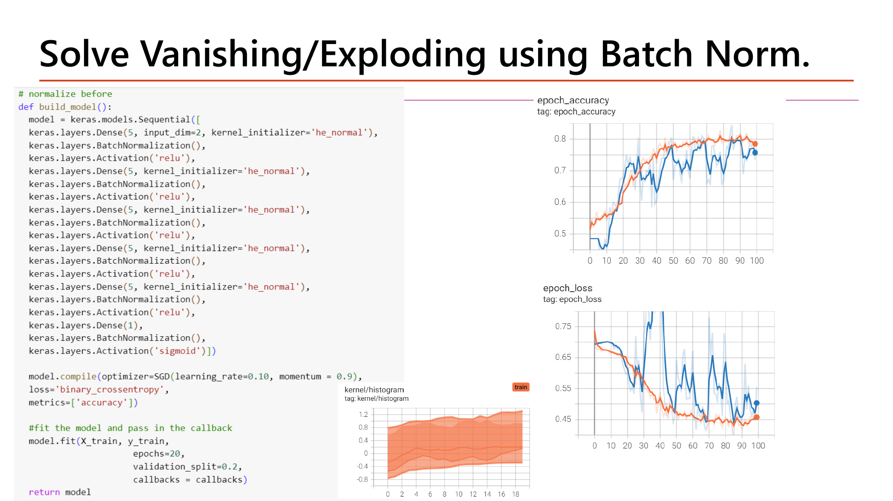
หน้า 18 คือทางแก้ของทั้งสองโรค และไม่ใช่แค่สไลด์ชื่อหัวข้อ — มันมีโค้ดเต็มและกราฟผลลัพธ์. สิ่งที่เปลี่ยนคือแทรก BatchNormalization() เข้าไประหว่าง Dense กับ Activation ของทุกชั้น (คอมเมนต์บรรทัดแรกเขียนว่า # normalize before = normalize ก่อนผ่าน activation) โดยที่ learning rate ยังเป็น 0.10 ตัวเดิมที่ทำให้โมเดลพังในหน้า 17.
# normalize before
def build_model():
model = keras.models.Sequential([
keras.layers.Dense(5, input_dim=2, kernel_initializer='he_normal'),
keras.layers.BatchNormalization(),
keras.layers.Activation('relu'),
keras.layers.Dense(5, kernel_initializer='he_normal'),
keras.layers.BatchNormalization(),
keras.layers.Activation('relu'),
keras.layers.Dense(5, kernel_initializer='he_normal'),
keras.layers.BatchNormalization(),
keras.layers.Activation('relu'),
keras.layers.Dense(5, kernel_initializer='he_normal'),
keras.layers.BatchNormalization(),
keras.layers.Activation('relu'),
keras.layers.Dense(5, kernel_initializer='he_normal'),
keras.layers.BatchNormalization(),
keras.layers.Activation('relu'),
keras.layers.Dense(1),
keras.layers.BatchNormalization(),
keras.layers.Activation('sigmoid')])
model.compile(optimizer=SGD(learning_rate=0.10, momentum = 0.9),
loss='binary_crossentropy',
metrics=['accuracy'])
#fit the model and pass in the callback
model.fit(X_train, y_train,
epochs=20,
validation_split=0.2,
callbacks = callbacks)
return model| โค้ด | ทำอะไร |
|---|---|
| Dense(5, kernel_initializer='he_normal') ไม่มี activation | จงใจไม่ใส่ activation= เพื่อให้ layer คืนค่า \(z\) ดิบๆ ออกมาก่อน |
| BatchNormalization() | ทำให้ \(z\) ของแต่ละ mini-batch มีค่าเฉลี่ย 0 และความแปรปรวน 1 (แล้วปรับด้วยพารามิเตอร์ \(\gamma, \beta\) ที่เรียนรู้ได้) — Lesson 5 §Batch Norm |
| Activation('relu') | ค่อยผ่าน activation หลังจาก normalize แล้ว ⇒ input ของ ReLU อยู่ในช่วงที่ควบคุมได้เสมอ |
| ลำดับ Dense → BN → Activation | คือความหมายของคอมเมนต์ # normalize before. อีกแบบคือ Dense(relu) → BN ("normalize after") ซึ่งสคริปต์ในคาบเอามาเทียบกัน — ทั้งสองแบบใช้ได้ ตำราถกเถียงกันว่าแบบไหนดีกว่า |
| Dense(1) → BatchNormalization() → Activation('sigmoid') | ใส่ BN ก่อน sigmoid ของ output ด้วย (ปกติไม่ค่อยทำกัน แต่สไลด์ทำเพื่อความสม่ำเสมอ) |
| SGD(learning_rate=0.10, momentum=0.9) | เหมือนหน้า 17 เป๊ะ — ประเด็นทั้งหมดคือ BN ทำให้ learning rate ที่เคยพังกลับใช้ได้ |
ผลลัพธ์ที่คาด: กราฟในสไลด์แสดง epoch_accuracy ไต่ขึ้นจากราว 0.47 ไปถึงประมาณ 0.80 และ epoch_loss ลดจากราว 0.72 ลงมาราว 0.45 ตลอดแกน 0–100 และ kernel/histogram มีแถบที่บานออกจาก \(\pm0.4\) เป็นราว \(-0.8\) ถึง \(+1.2\) — ทั้งสามอย่างคือสัญญาณว่าเรียนรู้ได้จริง. ในสคริปต์ที่รันในคาบ รุ่น "normalize after" ที่ learning rate 0.2 ให้ accuracy: 0.7937 - loss: 0.4558 ที่ epoch 50 เทียบกับ 0.5088 / 0.6943 ของรุ่นไม่มี BN ที่ learning rate เดียวกัน.
ความแปรปรวนคือ "ค่าเฉลี่ยของระยะห่างกำลังสองจากค่าเฉลี่ย" — ยิ่งมากแปลว่าข้อมูลยิ่งกระจาย
ได้ชุดเดิมเป๊ะ เพราะทั้งตัวเศษและตัวส่วนโตขึ้นเป็นสัดส่วนเดียวกัน
ไม่ว่า \(z\) ที่ไหลเข้ามาจะใหญ่แค่ไหน ค่าที่ส่งต่อไปยัง activation ถัดไปจะอยู่ราว \(\pm1.3\) เสมอ ⇒ (ก) ไม่ระเบิด และ (ข) ไม่ตกไปอยู่ในโซนอิ่มตัวของ tanh/sigmoid. นี่คือเหตุผลที่ BN แก้ได้ทั้งสองโรคด้วยกลไกเดียว และเป็นเหตุผลที่หน้า 18 ใช้ learning rate 0.10 ตัวเดิมที่หน้า 17 พังได้อย่างปลอดภัย.
RandomUniform(0,1) เทรนไม่ขึ้น (accuracy ค้างที่ 0.5163) เพราะเหตุผลเชิงกลไกใดมากที่สุด?kernel_0 ที่แบนราบตลอด 20 epoch และแกนของ bias_0 ไล่แค่ระดับ 1e-4 โมเดลใช้ ReLU กับ he_normal อยู่แล้ว สาเหตุที่น่าจะเป็นมากที่สุดคือ?activation='relu' ↔ kernel_initializer='he_normal' (ReLU คู่ He, sigmoid/tanh คู่ Xavier/Glorot — หน้า 22); ลำดับ Dense → BatchNormalization() → Activation('relu') สำหรับ "normalize before"; และตัวแปรเดียวที่ต่างระหว่างหน้า 17 กับหน้า 18 คือการแทรก BN (learning rate 0.10 เท่ากัน)ปัญหาก่อน: ตลอดห้าบทที่ผ่านมา ทุกครั้งที่เขียนโค้ดเราต้อง "เลือกตัวเลข" เต็มไปหมด — Dense(10) ทำไมไม่ใช่ 20? learning_rate=0.03 ทำไมไม่ใช่ 0.003? กี่ layer ดี? dropout เท่าไร? ที่ผ่านมาเราเลือกตามที่อาจารย์บอกหรือตามความรู้สึก. หน้า 19–32 ตอบคำถามว่าจะเลือกอย่างมีระบบได้อย่างไร.
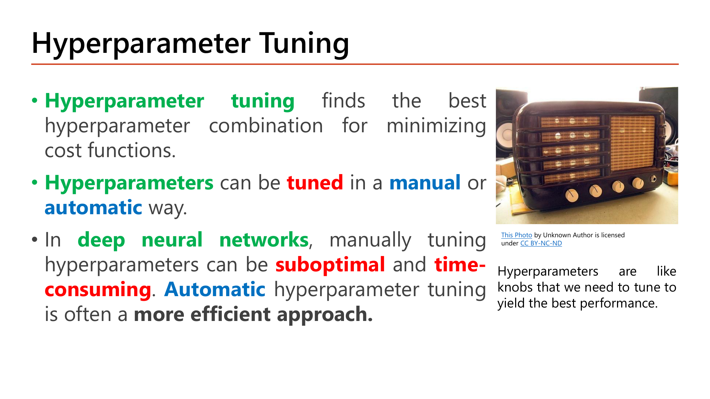
อาจารย์เปิดด้วยการเปรียบเทียบที่จำง่าย: hyperparameter เหมือนปุ่มหมุนบนวิทยุเก่า ที่ต้องค่อยๆ หมุนหาจนเสียงชัดที่สุด (คำบรรยายใต้ภาพเขียนว่า "Hyperparameters are like knobs that we need to tune to yield the best performance"). สามประโยคที่ทำสีไว้เรียงกันเป็นเหตุผลครบชุด:
ทำไม "โมเดลลึก" ถึงทำให้การจูนด้วยมือแย่เป็นพิเศษ? เพราะจำนวนปุ่มโตตามความลึก (ทุก layer เพิ่มมาก็มีจำนวน unit, activation, dropout rate ของตัวเอง) และการเทรนแต่ละครั้งใช้เวลานาน. คนที่หมุนปุ่มเองจึงลองได้ไม่กี่ชุดและมักติดอยู่กับ "ชุดที่คุ้นเคย" แทนที่จะสำรวจให้ทั่ว.
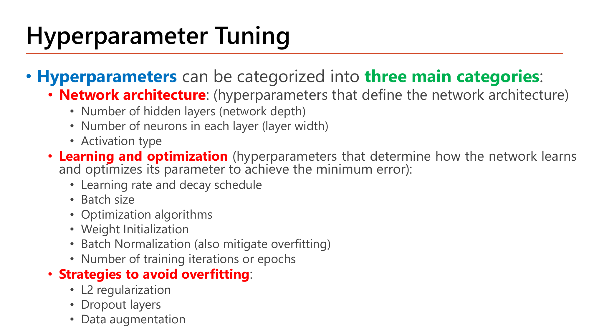
สไลด์บอกว่า Hyperparameters can be categorized into three main categories ซึ่งเป็นโครงที่ควรท่องให้ได้ เพราะข้อสอบชอบถามว่า "ข้อใดอยู่ในหมวดใด". วิธีจำที่ได้ผลคือถามว่าแต่ละหมวดตอบคำถามอะไร:
| หมวด (ชื่อตามสไลด์) | ตอบคำถามว่า | สมาชิกครบตามสไลด์ |
|---|---|---|
| Network architecture | โมเดล "ใหญ่/รูปร่างอย่างไร" | จำนวน hidden layer (network depth), จำนวน neuron ในแต่ละ layer (layer width), activation type |
| Learning and optimization | โมเดล "เรียนรู้อย่างไร" (ไปถึง error ต่ำสุดด้วยวิธีใด) | learning rate และ decay schedule, batch size, optimization algorithms, weight initialization, batch normalization (ช่วยลด overfitting ด้วย), จำนวน iteration/epoch |
| Strategies to avoid overfitting | กัน "ท่องจำข้อสอบเก่า" อย่างไร | L2 regularization, dropout layers, data augmentation |
สังเกตรายละเอียดที่สไลด์วงเล็บไว้: Batch Normalization (also mitigate overfitting) — BN ถูกจัดอยู่หมวดที่ 2 แต่มีผลข้างเคียงช่วยหมวดที่ 3 ด้วย เพราะสถิติของ mini-batch ที่ต่างกันทุกก้าวทำหน้าที่เป็น noise เล็กๆ คล้าย regularization. ข้อสอบชอบใช้ตัวนี้เป็นตัวหลอกเพราะตอบได้สองหมวด — ถ้าถามว่า "จัดอยู่หมวดไหน" ให้ตอบตามที่สไลด์จัดคือ Learning and optimization.
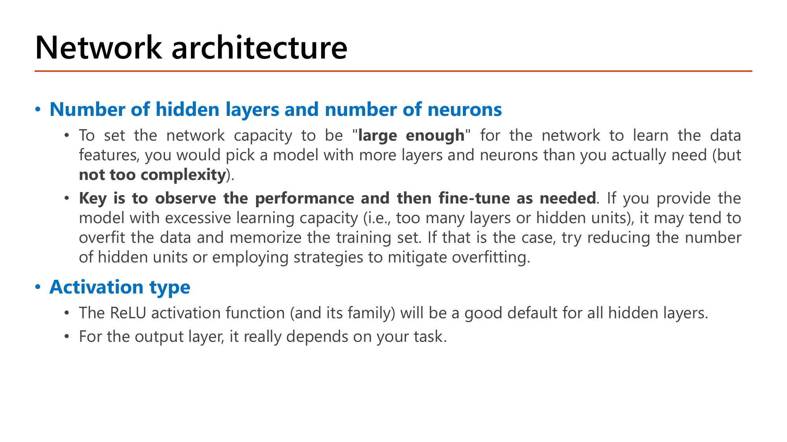
หน้า 21 เจาะหมวดแรก. หัวข้อย่อยแรกคือ Number of hidden layers and number of neurons และคำแนะนำของอาจารย์สวนสัญชาตญาณของมือใหม่: ให้เลือกโมเดลที่มี layer และ neuron มากกว่าที่จำเป็นจริงๆ เพื่อให้ความจุ (capacity) "large enough" พอจะเรียนรู้ลักษณะของข้อมูลได้ — แต่วงเล็บไว้ว่า but not too complexity. แล้วประโยคที่ทำตัวหนาคือกลยุทธ์: Key is to observe the performance and then fine-tune as needed — คือเริ่มใหญ่ไว้ก่อน ดูผล แล้วค่อยหด. เหตุผลที่ต้องหดก็เพราะถ้าให้ความจุมากเกินไป โมเดล "may tend to overfit the data and memorize the training set" และเมื่อเจออาการนั้นให้ลดจำนวน hidden unit ลงหรือใช้วิธีของหมวดที่ 3.
หัวข้อย่อยที่สองคือ Activation type ซึ่งอาจารย์ให้คำตอบสำเร็จรูปเลย: ReLU และตระกูลของมันเป็น default ที่ดีสำหรับทุก hidden layer; ส่วน output layer "really depends on your task" (งานสองคลาสใช้ sigmoid, หลายคลาสใช้ softmax, ทำนายตัวเลขใช้ linear — ตาม Lesson 3). นี่คือ hyperparameter ที่ไม่ต้องเสียเวลาค้นหา เพราะมีกฎชัดเจนอยู่แล้ว.
เพิ่ม hidden unit 4 เท่า (32 → 128) ทำให้จำนวนพารามิเตอร์เพิ่ม 4 เท่าเกือบพอดี เพราะ layer แรกที่คูณกับ input 10,000 ช่องครองพารามิเตอร์เกือบทั้งหมด. ถ้าข้อมูล train มีแค่ 25,000 รีวิว การมีพารามิเตอร์ 1.28 ล้านตัวคือสูตรสำเร็จของการ "จำ" training set — นี่คือสิ่งที่สไลด์เตือนด้วยคำว่า memorize the training set. (เลข 320,065 นี้ไม่ใช่เลขสมมติ: มันคือ Total params ของโมเดลที่ชนะการจูนในสคริปต์ IMDB ของอาจารย์พอดี)
หน้า 22 คือหน้าที่ "ให้คำตอบมาเลย" มากที่สุดในบท — อ่านแล้วประหยัดเวลาค้นหาไปเยอะ. ไล่ทีละหัวข้อที่ทำสีไว้:
| Hyperparameter | คำแนะนำตามสไลด์ | โยงกลับไปที่ |
|---|---|---|
| Learning rate and decay schedule | ใช้ learning rate scheduling หรือ adaptive learning rate optimizer เพื่อลด learning rate ระหว่างเทรน | §5 ของบทนี้ (LearningRateScheduler / ReduceLROnPlateau) และ Adam/RMSProp ใน Lesson 4 |
| Batch size | จุดเริ่มต้นที่ใช้กันบ่อยคือ 32–256 แต่ค่าที่ดีที่สุดขึ้นกับงาน หน่วยความจำ การใช้ฮาร์ดแวร์ และพฤติกรรมการ optimize | จำนวน batch ต่อ epoch (§1) — batch ใหญ่ = อัปเดตน้อยครั้งต่อ epoch แต่แต่ละครั้งนิ่งกว่า |
| Optimization algorithms | SGD, RmsProp, Adam, AdamW และตระกูลของมัน — ใช้ค่าสัมประสิทธิ์เริ่มต้นได้เลย หรือจูนถ้าจำเป็น | Lesson 4 ทั้งหมด |
| Weight Initialization | ใช้ He สำหรับ ReLU และตระกูล หรือ Xavier (Glorat) สำหรับ sigmoid/tanh | Lesson 5 และการทดลองใน §7 ที่พิสูจน์ว่าเลือกผิดแล้วเทรนไม่ขึ้น |
| Batch normalization | อาจปรับ momentum โดยค่าที่ลองกันคือ 0.9, 0.99, 0.999 | §7 (หน้า 18) และ Lesson 5 |
| Number of training iterations or epochs | ไม่จำเป็นต้องจูนเลย — ตั้งจำนวน epoch ไว้เยอะๆ แล้วใช้ early stopping แทน | §2 ของบทนี้ |
สองบรรทัดสุดท้ายคือของแถมที่มีค่าที่สุดสำหรับข้อสอบ: การเลือก initializer ไม่ใช่การค้นหา แต่เป็นการจับคู่กับ activation (ReLU↔He, sigmoid/tanh↔Xavier) และ จำนวน epoch ไม่ใช่ hyperparameter ที่ต้องค้นหา เพราะ EarlyStopping จัดการให้แล้ว. สองข้อนี้ตัดมิติของพื้นที่ค้นหาออกไปได้ฟรีๆ ซึ่งสำคัญมากเมื่อเห็นตัวเลขใน §9.
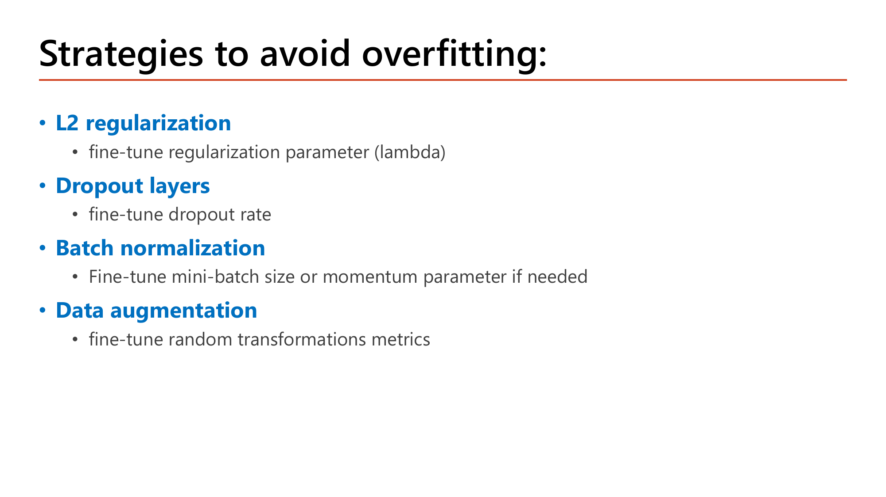
หน้า 23 ไล่หมวดที่สาม และรูปแบบของทุกบรรทัดเหมือนกันหมดคือ "เครื่องมือ → ปุ่มที่ต้องจูนของมัน" ซึ่งเป็นสิ่งที่ต้องจำเป็นคู่:
สังเกตว่า Batch normalization โผล่มาทั้งหน้า 20, 22 และ 23 — ย้ำอีกครั้งว่ามันมีสองบทบาท.
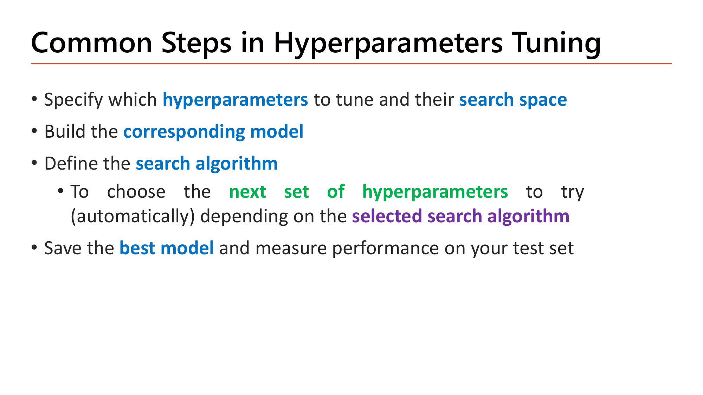
หน้า 24 คือ "สูตรสำเร็จ" ของการจูนที่ §10 จะทำตามทุกขั้นด้วย KerasTuner — จำสี่ขั้นนี้ให้ได้ตามลำดับ:
ปัญหาก่อน: ขั้นที่ 3 ของหน้า 24 บอกให้ "เลือก search algorithm" — แต่เลือกจากอะไร? ทั้งสี่ตัวทำงานเดียวกันคือ "เลือกชุด hyperparameter ชุดถัดไปที่จะลอง" ต่างกันแค่วิธีเลือก และความต่างนั้นแปลเป็นเวลาที่ต่างกันเป็นร้อยเท่า. ไล่จากโง่ที่สุดไปฉลาดที่สุด.
![Slide: Grid Search explores predefined combinations using a systematic brute-force search; every combination is trained and evaluated; it works when the model is simple and the search space small; for deep learning it is computationally expensive; it may miss better values between or outside the grid, a suboptimal solution. Figure titled Grid Layout: nine dots arranged in a regular pattern with a green curve above showing the important parameter's effect and a yellow curve at the left for the unimportant parameter](../assets/slides/dl6-p25-grid-search.png)
Grid Search คือวิธีที่ตรงไปตรงมาที่สุด: สไลด์บอกว่ามัน explores predefined combinations ของค่า hyperparameter ด้วย systematic brute-force search — แต่ละ hyperparameter ได้รับ "เซ็ตของค่าผู้สมัคร" มาชุดหนึ่ง แล้วโมเดลถูกเทรนและประเมินทุกการจับคู่ที่เป็นไปได้ (every combination). สไลด์ระบุเงื่อนไขการใช้ไว้ชัด: ได้ผลดีเมื่อ model is relatively simple และ search space is small; ส่วนกับ Deep Learning มันเป็นวิธีที่ computationally expensive เพราะต้องเทรนซ้ำหลายชุดมาก.
อ่านรูป Grid Layout ให้ได้ประเด็น: แกนนอนของรูปคือพารามิเตอร์ที่ "สำคัญ" (important parameter — เส้นโค้งสีเขียวด้านบนแสดงว่าคะแนนเปลี่ยนแปลงมากตามแกนนี้ และมียอดแหลมอยู่จุดหนึ่ง) ส่วนแกนตั้งคือพารามิเตอร์ที่ "ไม่สำคัญ" (unimportant parameter — เส้นสีเหลืองด้านซ้ายแทบแบน คะแนนแทบไม่เปลี่ยนไม่ว่าจะตั้งค่าใด). การทดลองทั้งหมดมี 9 จุด = 3 ค่าของแกนนอน × 3 ค่าของแกนตั้ง. ผลคือเราจ่ายค่าเทรน 9 ครั้ง แต่ได้ข้อมูลเกี่ยวกับพารามิเตอร์สำคัญแค่ 3 ค่าเท่านั้น — อีก 6 ครั้งคือการลองค่าเดิมซ้ำโดยเปลี่ยนปุ่มที่ไม่มีผล. และถ้ายอดของเส้นเขียวบังเอิญอยู่ระหว่างสองค่าที่เราเลือก เราจะพลาดมันไปเลย ซึ่งคือสิ่งที่สไลด์ทำสีแดงไว้ว่าได้ (suboptimal solution) — Grid Search หา "ค่าที่ดีที่สุดภายในตารางที่กำหนดไว้ล่วงหน้า" ได้จริง แต่ไม่รับประกันว่าดีที่สุดจริงๆ เพราะอาจพลาดค่าที่อยู่ระหว่างหรือนอกตาราง.
num_layers ∈ {1, 2}; units_i ∈ [10, 50] step 1 = 41 ค่าต่อ layer; activation ∈ {relu, elu, selu} = 3 ค่า (ใช้ร่วมกันทุก layer); dropout_i ∈ {0, 0.1, …, 0.5} = 6 ค่าต่อ layer; lr เป็นค่าต่อเนื่อง — สมมติว่าเราทำเป็นตาราง 5 ค่าประมาณ 911,430 ครั้งของการเทรน. ถ้าครั้งละ 1 นาทีก็ใช้เวลาราว 1.7 ปี. เทียบกับสไลด์หน้า 31 ที่ค้นด้วย Hyperband ใช้เพียง 211 trial และเวลา 43 นาที 46 วินาที. นี่คือความหมายรูปธรรมของคำว่า computationally expensive: จำนวนชุดโตแบบคูณตามจำนวนตัวเลือกของทุกปุ่ม (เพิ่มปุ่มใหม่ที่มี 10 ค่า = งานเพิ่ม 10 เท่าทันที).
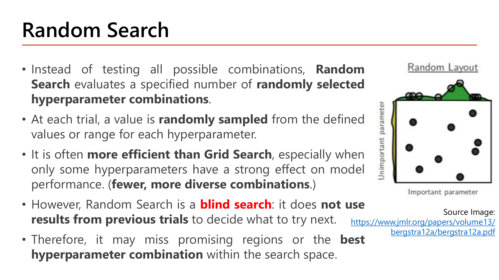
Random Search แก้ปัญหาข้างบนด้วยไอเดียที่ดูไม่น่าจะได้ผลแต่ได้ผลจริง: แทนที่จะลองทุกการจับคู่ ให้สุ่มชุดค่าขึ้นมาตามจำนวนครั้งที่เรากำหนดเอง (a specified number of randomly selected hyperparameter combinations) โดยแต่ละ trial สุ่มค่าของแต่ละ hyperparameter จากช่วงหรือรายการที่นิยามไว้.
อ่านรูป Random Layout เทียบกับรูปก่อนหน้า: จำนวนจุดเท่ากันคือ 9 จุด (งบเท่ากัน) แต่คราวนี้ไม่มีจุดไหนมีพิกัดแกนนอนซ้ำกันเลย ⇒ พารามิเตอร์สำคัญถูกทดสอบถึง 9 ค่าที่ต่างกัน เทียบกับ 3 ค่าของ Grid. โอกาสที่จะมีจุดใดจุดหนึ่งตกใกล้ยอดของเส้นโค้งสีเขียวจึงสูงกว่ามาก ทั้งที่จ่ายเท่ากัน. นี่คือความหมายของวลีที่สไลด์เน้นว่า fewer, more diverse combinations และเหตุผลที่มัน more efficient than Grid Search โดยเฉพาะเมื่อ "only some hyperparameters have a strong effect on model performance" — ซึ่งเป็นสถานการณ์ปกติของ deep learning.
แต่สไลด์ก็ทำสีแดงจุดอ่อนไว้ด้วย: Random Search เป็น blind search — มัน does not use results from previous trials ในการตัดสินใจว่าจะลองอะไรต่อ. trial ที่ 30 สุ่มแบบเดียวกับ trial ที่ 1 เป๊ะ ทั้งที่ตอนนั้นเรามีข้อมูลแล้ว 29 จุดว่าย่านไหนดีย่านไหนแย่. ผลคือ "it may miss promising regions or the best hyperparameter combination within the search space" — มันอาจเดินผ่านย่านที่มีแวว แล้วไม่กลับไปขุดต่อ. สองอัลกอริทึมที่เหลือคือการแก้ข้อนี้คนละทาง.
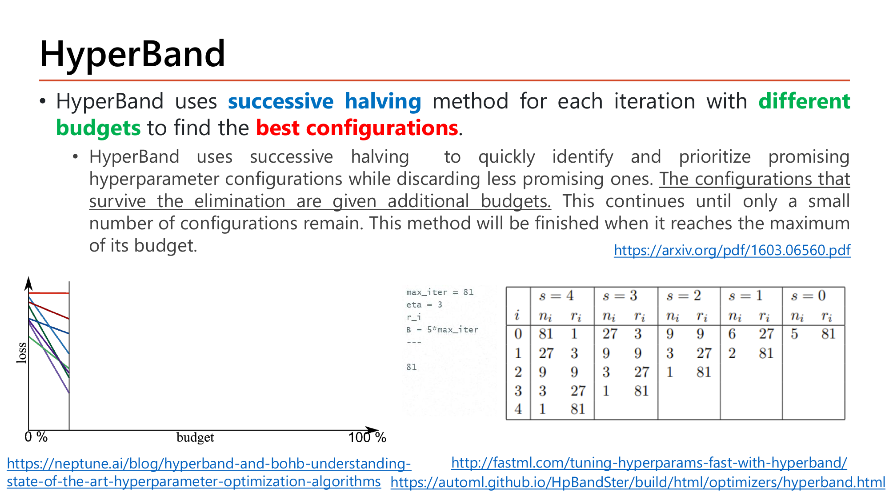
HyperBand โจมตีจากอีกมุม: แทนที่จะฉลาดขึ้นเรื่อง "เลือกอะไรต่อ" มันฉลาดเรื่อง "จ่ายเท่าไรให้แต่ละตัว". สไลด์บอกว่า HyperBand ใช้วิธี successive halving ในแต่ละรอบด้วย different budgets เพื่อหา best configurations และขยายความว่า: มันใช้ successive halving เพื่อระบุและให้ความสำคัญกับ configuration ที่มีแววอย่างรวดเร็ว พร้อมทั้งทิ้งตัวที่ดูไม่มีแวว; configuration ที่รอดจากการคัดออกจะได้รับงบเพิ่ม (The configurations that survive the elimination are given additional budgets) ทำซ้ำจนเหลือเพียงไม่กี่ตัว และจบเมื่อใช้งบสูงสุดครบ.
สัญชาตญาณเบื้องหลังคือข้อสังเกตง่ายๆ: configuration ที่แย่มักแย่ตั้งแต่ epoch แรกๆ เราไม่จำเป็นต้องเทรนมันครบ 81 epoch ถึงจะรู้. กราฟด้านซ้ายของสไลด์แสดงเส้น loss ของหลาย configuration ที่งบน้อย — เห็นชัดว่าบางเส้นดิ่งลงเร็ว บางเส้นแทบไม่ขยับ ⇒ ตัดเส้นที่ไม่ขยับทิ้งได้ตั้งแต่ยังจ่ายไปนิดเดียว.
ตารางด้านขวาคือการจัดสรรงบจริง โดยมีหัวตารางกำกับว่า max_iter = 81, eta = 3, \(B = 5 \times \text{max\_iter}\). สูตรของแต่ละ bracket คือ (ให้ \(n\) = จำนวน configuration เริ่มต้น, \(r\) = งบเริ่มต้นต่อตัว, \(\eta\) = ตัวหารการคัดออก):
ทุกรอบถัดไป จำนวนผู้รอดหารด้วย \(\eta\) ส่วนงบต่อตัวคูณด้วย \(\eta\)
ตรงกับคอลัมน์ \(s=4\) ของตารางในสไลด์ทุกช่อง (81/1, 27/3, 9/9, 3/27, 1/81)
ทุกรอบใช้งบเท่ากันพอดี — นี่คือการออกแบบของ successive halving: "ได้งบเพิ่มเป็น \(\eta\) เท่า แต่คนรับลดลง \(\eta\) เท่า" จึงหักล้างกันพอดี
สำรวจ 81 configuration ด้วยงบ 405 epoch แทนที่จะเป็น 6,561 — ถูกกว่าราว 16 เท่า เพราะตัวที่แย่ถูกตัดทิ้งตั้งแต่ใช้งบไปแค่ 1–3 epoch. คอลัมน์อื่นของตารางคือ bracket ที่เริ่มต้นต่างกัน เช่น \(s=3\) เริ่มที่ (27, 3), \(s=2\) เริ่มที่ (9, 9), \(s=1\) เริ่มที่ (6, 27) และ \(s=0\) คือ (5, 81) ซึ่งไม่ตัดใครเลยแต่ให้งบเต็มทุกตัวตั้งแต่แรก — การมีหลาย bracket ก็เพื่อกันกรณีที่ "ตัวที่ออกตัวช้าแต่ชนะตอนท้าย" ถูกตัดทิ้งไปตั้งแต่แรก. ใน KerasTuner (หน้า 30) พารามิเตอร์ max_epochs=81 และ factor=3 ก็คือ \(\text{max\_iter}=81\) กับ \(\eta=3\) ตัวเดียวกันนี้.
![Slide: Bayesian Optimization evaluates past model information to select hyperparameter values for the newer model, requiring fewer iterations because it disregards unpromising areas. Two key components: a surrogate model (a probabilistic model learning the mapping from hyperparameters to expected performance) and an acquisition function (deciding what to exploit and what to explore). Three plots of UCB with lambda 0.2, 1.2 and 5 show observed data points, a dashed true function, a red surrogate curve, a blue acquisition curve and a green confidence band](../assets/slides/dl6-p28-bayesian-optimization.png)
Bayesian Optimization คือตัวที่ "ฉลาดที่สุด" ในสี่ตัว เพราะมันแก้จุดอ่อน blind search ของ Random ตรงๆ. สไลด์บอกว่ามันก็รันโมเดลหลายครั้งด้วยชุดค่าต่างๆ เหมือนกัน แต่มันประเมิน past model information เพื่อ select hyperparameter values สำหรับสร้างโมเดลตัวถัดไป. ผลคือ "requires less iterations to get to the optimal set" เพราะมันตัดย่านที่เชื่อว่าไม่มีอะไรดีทิ้งไป. และสไลด์ระบุ two key components ไว้สองตัวที่ต้องจำคู่กัน:
แถบสีเขียวในรูปคือช่วงความเชื่อมั่น (Upper/Lower Confidence Interval) ซึ่งกว้างตรงที่ยังไม่มีจุดข้อมูลและแคบตรงที่มีจุดหนาแน่น — นั่นคือ "ความไม่แน่ใจ" \(\sigma(x)\) ที่ acquisition function เอาไปใช้.
เวลาเราทำนายอะไรสักอย่าง มีตัวเลขสองตัวที่ต้องแยกกัน: \(\mu\) (mu) = ค่าที่คาดว่าจะได้, และ \(\sigma\) (sigma) = ความไม่แน่ใจของการคาดนั้น.
ตัวอย่างในชีวิตจริง: ร้านอาหาร A คุณเคยกินมา 20 ครั้ง ชอบทุกครั้ง ⇒ \(\mu\) สูง (8.5/10), \(\sigma\) ต่ำ (0.2) เพราะรู้ดีแล้ว. ร้าน B เพิ่งเปิด ยังไม่เคยกิน เพื่อนบอกว่า "น่าจะโอเค" ⇒ \(\mu\) ต่ำกว่านิดหน่อย (8.0) แต่ \(\sigma\) สูงมาก (2.0) เพราะอาจจะห่วยมากหรืออาจจะเป็นร้านที่ดีที่สุดในชีวิตก็ได้.
ถ้าเหลือมื้อเดียวในชีวิต ควรไป A (ปลอดภัย = exploit); แต่ถ้ายังมีอีกหลายร้อยมื้อ การลอง B คุ้มกว่าเพราะถ้ามันดีจริงเราจะได้กลับไปอีกหลายครั้ง (explore). ตัวเลข \(\lambda\) ในสูตรหน้าถัดไปคือ "ปุ่มปรับความกล้าเสี่ยง" ที่ตัดสินว่าจะเอนไปทางไหน.
สไลด์ใช้ acquisition function แบบ UCB (Upper Confidence Bound) ซึ่งเขียนกำกับไว้บนกราฟทั้งสามรูป:
$$\text{UCB}_\lambda(x) = \mu(x) + \lambda\,\sigma(x)$$คะแนนที่คาดไว้ บวกโบนัสตามความไม่แน่ใจ โดย \(\lambda\) คือตัวคูณของโบนัส
หมายเหตุใต้รูปของสไลด์สรุปไว้ว่า \(\lambda\) ควบคุม exploration–exploitation trade-off: \(\lambda\) ใหญ่เอื้อย่านที่ไม่แน่ใจ (exploration) ส่วน \(\lambda\) เล็กเอื้อย่านที่คาดว่าคะแนนสูง (exploitation). สังเกตกราฟทั้งสามรูปในสไลด์: ที่ \(\lambda = 0.2\) เส้นน้ำเงินแทบทับเส้นแดง (เชื่อ \(\mu\) เป็นหลัก); ที่ \(\lambda = 1.2\) เริ่มแยกตัวขึ้นตรงย่านที่แถบเขียวกว้าง; ที่ \(\lambda = 5\) เส้นน้ำเงินพุ่งสูงจนสเกลแกนตั้งต้องขยายไปถึง 60 และยอดของมันอยู่ในย่านที่ไม่มีจุดข้อมูลเลย — แปลว่ามันจะไปลองตรงที่ไม่รู้จักก่อน.
A ชนะ ⇒ ไปขุดต่อในย่านที่รู้ว่าดีอยู่แล้ว
B ชนะขาด เพราะโบนัสความไม่แน่ใจของมัน (0.24) ใหญ่กว่าส่วนต่างของ \(\mu\) (0.05) มาก
ยิ่งห่างกันมากขึ้นไปอีก — แทบไม่สนใจ \(\mu\) แล้ว
จุดที่ค่าเฉลี่ยต่ำกว่า (B: 0.80) ถูกเลือกได้ ถ้า \(\lambda\) ใหญ่พอให้โบนัสความไม่แน่ใจชนะ. จุดพลิกอยู่ที่ \(\lambda\) ซึ่งทำให้สองค่าเท่ากัน: \(0.85 + 0.02\lambda = 0.80 + 0.20\lambda \Rightarrow 0.05 = 0.18\lambda \Rightarrow \lambda \approx 0.28\). ต่ำกว่านี้เลือก A สูงกว่านี้เลือก B — ตรงกับที่สไลด์สรุปว่า larger \(\lambda\) favors uncertain regions (exploration) while smaller \(\lambda\) favors regions with high predicted values (exploitation).
สรุปเทียบทั้งสี่ตัวในตารางเดียว (นี่คือรูปแบบข้อสอบที่เดาได้ง่ายที่สุดของหัวข้อนี้):
| อัลกอริทึม | เลือกชุดถัดไปอย่างไร | ใช้ผลของ trial ก่อนหน้าไหม | จุดอ่อนที่สไลด์ระบุ |
|---|---|---|---|
| Grid Search | ไล่ทุกการจับคู่ในตารางที่กำหนดไว้ล่วงหน้า (brute force) | ไม่ | แพงมากใน deep learning และได้ suboptimal solution เพราะพลาดค่าระหว่าง/นอกตาราง |
| Random Search | สุ่มจากช่วงที่นิยามไว้ ตามจำนวนครั้งที่กำหนด | ไม่ — เป็น blind search | อาจพลาดย่านที่มีแวว เพราะไม่กลับไปขุดต่อ |
| HyperBand | สุ่มมาเยอะ แล้วใช้ successive halving ตัดตัวที่แย่ออกเมื่อใช้งบน้อย ให้งบเพิ่มกับตัวที่รอด | ใช้ — แต่ใช้เฉพาะ "ผลช่วงต้นของ trial เดียวกัน" ไม่ได้เรียนรู้ข้ามชุด | อาจตัดตัวที่ออกตัวช้าแต่ดีในระยะยาวทิ้งไป |
| Bayesian Optimization | ใช้ surrogate model ทำนาย \(\mu, \sigma\) แล้วให้ acquisition function เลือกจุดถัดไป | ใช้เต็มที่ — เรียนรู้จากทุก trial ที่ผ่านมา | ต้องปรับ \(\lambda\) ให้พอดี; \(\lambda\) เล็กไปวนอยู่ย่านเดิม \(\lambda\) ใหญ่ไปกลายเป็น Random |
max_iter=81, \(\eta=3\) bracket \(s=4\) (เริ่ม 81 configuration ด้วยงบ 1) ในรอบ \(i=2\) จะมี \((n_i, r_i)\) เท่าใด?ปัญหาก่อน: §9 อธิบายอัลกอริทึมไว้หมดแล้ว แต่ถ้าต้องเขียนเองทั้ง loop (สุ่มค่า → สร้างโมเดล → เทรน → จดคะแนน → เลือกชุดถัดไป → ทำซ้ำ) ก็คงไม่ไหว. KerasTuner คือไลบรารีที่ทำ loop นั้นให้ เหลือหน้าที่ของเราแค่สองอย่าง: บอกว่า "โมเดลหน้าตาอย่างไรและปุ่มไหนให้ปรับได้บ้าง" กับ "ใช้อัลกอริทึมไหน".
![Slide: Implementation using Keras Tuner. pip install keras-tuner. A HyperModel is a function build_model(hp) returning a compiled Keras model, where hp is the HyperParameter object. Code loops over hp.Int('num_layers', 1, 2) adding Dense with units=hp.Int('units_'+str(i), 10, 50, step=1) and activation=hp.Choice('activation', ['relu','elu','selu']) plus Dropout(hp.Float('dropout_'+str(i), 0, 0.5, step=0.1)); output Dense(1, sigmoid); compiled with Adam(learning_rate=hp.Float('lr', 1e-4, 1e-2, sampling='log')). A boxed example shows hp.Boolean('dropout')](../assets/slides/dl6-p29-keras-tuner-hypermodel.png)
สไลด์บอกว่า KerasTuner เป็น "general-purpose hyperparameter tuning library" และวิธีใช้เริ่มจากการเขียนฟังก์ชันที่คืนโมเดล Keras ที่ compile แล้ว (aka HyperModel) โดยฟังก์ชันนั้นรับอาร์กิวเมนต์ชื่อ hp สำหรับนิยาม hyperparameter ระหว่างสร้างโมเดล. สไลด์มีหมายเลขกำกับสองจุดในรูป: ❶ ชี้ที่ hp พร้อมคำอธิบายว่า "hp : HyperParameter object to be config to tune" และ ❷ ชี้ที่ return model พร้อมคำว่า "Compiled model with hyperparameters to tune". และย้ำว่ามี hyperparameter หลายชนิดให้ใช้: Int, Float, Choice, Boolean.
แนวคิดที่ต้องเปลี่ยนในหัว: แทนที่จะเขียน Dense(32, ...) ด้วยตัวเลขตายตัว เราเขียน Dense(hp.Int("units", 10, 50)) ซึ่งแปลว่า "ตรงนี้เป็นช่องว่าง ให้ tuner มาเติมเลขระหว่าง 10 ถึง 50 เอง". ฟังก์ชันนี้จะถูกเรียกใหม่ทุก trial และแต่ละครั้ง hp จะแจกค่าคนละชุด.
!pip install keras-tuner
def build_model(hp):
# build the model
model = models.Sequential()
Flatten(input_shape=(X.shape[1:],))
for i in range(hp.Int("num_layers", min_value=1, max_value=2)):
model.add(Dense(units=hp.Int("units_" + str(i), min_value=10, max_value=50, step=1),
activation=hp.Choice("activation", values=['relu', 'elu', 'selu'])))
model.add(Dropout(hp.Float("dropout_" + str(i), 0, 0.5, step=0.1)))
model.add(Dense(1, activation='sigmoid'))
# compile the model
model.compile(optimizer=keras.optimizers.Adam(learning_rate=hp.Float("lr", 1e-4, 1e-2, sampling='log')),
loss='binary_crossentropy',
metrics=['accuracy'])
return model
# hp : Boolean Example
# Tune whether to use dropout.
if hp.Boolean("dropout"):
model.add(layers.Dropout(rate=0.25))| โค้ด | ทำอะไร |
|---|---|
| !pip install keras-tuner | ติดตั้งไลบรารี (เครื่องหมาย ! คือการรันคำสั่ง shell จากใน notebook). ตอน import ใช้ชื่อ keras_tuner และนิยมย่อว่า kt |
| def build_model(hp): | ชื่อพารามิเตอร์ต้องเป็น hp และเป็นอาร์กิวเมนต์เดียว — tuner จะส่ง HyperParameter object เข้ามาให้เอง เราไม่เคยสร้างมันเอง |
| Flatten(input_shape=(X.shape[1:],)) | กำหนดรูปร่าง input จากข้อมูลจริง (X.shape[1:] = ทุกมิติยกเว้นจำนวนแถว). หมายเหตุ: บรรทัดนี้บนสไลด์พิมพ์วงเล็บไม่ครบและไม่ได้ model.add(...) — ของจริงต้องเป็น model.add(Flatten(input_shape=X.shape[1:])) |
| hp.Int("num_layers", min_value=1, max_value=2) | ให้ tuner เลือกจำนวน hidden layer เป็น 1 หรือ 2. ค่าที่ได้ถูกใช้เป็นขอบของ range() ⇒ จำนวน layer เองก็เป็น hyperparameter ได้ |
| "units_" + str(i) | ชื่อต้องไม่ซ้ำกัน จึงต่อเลข layer ต่อท้าย ⇒ ได้ units_0, units_1. ถ้าใช้ชื่อเดียวกันทั้งสอง layer จะกลายเป็นการบังคับให้สอง layer มีขนาดเท่ากัน |
| hp.Int(..., min_value=10, max_value=50, step=1) | จำนวนเต็มตั้งแต่ 10 ถึง 50 ทีละ 1 ⇒ 41 ค่าที่เป็นไปได้ (ตัวเลขที่ใช้คำนวณใน §9) |
| hp.Choice("activation", values=['relu','elu','selu']) | เลือกหนึ่งจากรายการ. สังเกตว่าชื่อ ไม่มี str(i) ต่อท้าย ⇒ ทุก layer ใช้ activation ตัวเดียวกัน (ตั้งใจให้เป็นแบบนั้น) |
| hp.Float("dropout_" + str(i), 0, 0.5, step=0.1) | ทศนิยม 0 ถึง 0.5 ทีละ 0.1 ⇒ 6 ค่า (0, 0.1, 0.2, 0.3, 0.4, 0.5). อาร์กิวเมนต์ที่ 2 และ 3 คือ min/max ที่ส่งแบบไม่ระบุชื่อได้ |
| model.add(Dense(1, activation='sigmoid')) | output layer ตายตัว ไม่ได้จูน เพราะงานเป็น binary classification (หน้า 21: output ขึ้นกับ task) |
| hp.Float("lr", 1e-4, 1e-2, sampling='log') | learning rate ระหว่าง 0.0001 ถึง 0.01 โดยสุ่มแบบ log (ดูเหตุผลในกรอบคำนวณด้านล่าง) |
| return model | ต้องคืนโมเดลที่ compile แล้ว (❷ ในสไลด์). ถ้าลืม compile tuner จะเทรนไม่ได้ |
| if hp.Boolean("dropout"): | ตัวอย่างในกรอบขวาของสไลด์: ใช้ hp.Boolean ตัดสินว่าจะมี Dropout layer หรือไม่ — เป็น hyperparameter แบบเปิด/ปิด ไม่ใช่ค่าตัวเลข |
ผลลัพธ์ที่คาด: ตัวฟังก์ชันเองไม่พิมพ์อะไร — ผลลัพธ์ของมันคือโมเดลหนึ่งตัวต่อการเรียกหนึ่งครั้ง. สิ่งที่พิมพ์ออกมาจะเห็นตอนเรียก tuner.search_space_summary() ในหน้า 30.
สรุปชนิดของ "ช่อง" ที่ hp เปิดให้ ซึ่งสไลด์ระบุไว้สี่แบบ:
| ฟังก์ชัน | ได้ค่าแบบไหน | ตัวอย่างในสไลด์ |
|---|---|---|
hp.Int(name, min_value, max_value, step) | จำนวนเต็มในช่วง | num_layers 1–2; units_i 10–50 step 1 |
hp.Float(name, min, max, step / sampling) | ทศนิยมในช่วง | dropout_i 0–0.5 step 0.1; lr 1e-4–1e-2 แบบ log |
hp.Choice(name, values) | เลือก 1 จากรายการที่ให้ | activation ∈ {relu, elu, selu} |
hp.Boolean(name) | จริง/เท็จ | dropout — ใช้ dropout layer หรือไม่ |
sampling='log'แปลว่า 91% ของ trial จะไปกองอยู่ในช่วง 0.001–0.01 ทั้งที่ช่วง 0.0001–0.001 ก็สำคัญไม่แพ้กัน
แบบ log ให้โอกาสเท่ากันทุก "ระดับ" (\(10^{-4}\!\sim\!10^{-3}\) เท่ากับ \(10^{-3}\!\sim\!10^{-2}\)) ซึ่งเหมาะกับ learning rate เพราะสิ่งที่สำคัญคือขนาดหลัก (เลขชี้กำลัง) ไม่ใช่ผลต่างเชิงเส้น — การเปลี่ยนจาก 0.0001 เป็น 0.0002 (เท่าตัว!) สำคัญกว่าการเปลี่ยนจาก 0.0090 เป็น 0.0091 มาก ทั้งที่ระยะห่างเชิงเส้นพอๆ กัน. กฎง่ายๆ: hyperparameter ที่เราคิดเป็น "กี่ยกกำลัง" (learning rate, \(\lambda\) ของ L2, weight decay) ให้ใช้ sampling='log'; ที่คิดเป็น "กี่หน่วย" (จำนวน unit, dropout rate) ใช้แบบเส้นตรง.
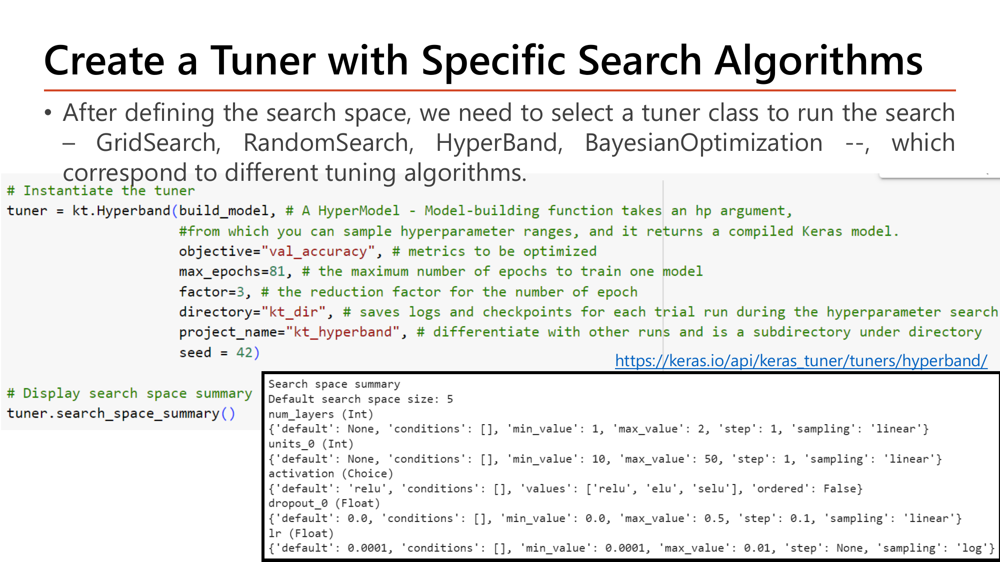
หน้า 30 คือขั้นที่ 3 ของหน้า 24: หลังนิยาม search space แล้วต้องเลือก tuner class และสไลด์ไล่ชื่อไว้สี่ตัว — GridSearch, RandomSearch, HyperBand, BayesianOptimization — ซึ่ง "correspond to different tuning algorithms" คือตรงกับสี่อัลกอริทึมของ §9 เป๊ะ. ข้อดีของการออกแบบแบบนี้คือ build_model ไม่ต้องแก้เลย เปลี่ยนแค่ชื่อคลาส.
# Instantiate the tuner
tuner = kt.Hyperband(build_model, # A HyperModel - Model-building function takes an hp argument
# from which you can sample hyperparameter ranges, and it returns a compiled Keras model.
objective="val_accuracy", # metrics to be optimized
max_epochs=81, # the maximum number of epochs to train one model
factor=3, # the reduction factor for the number of epoch
directory="kt_dir", # saves logs and checkpoints for each trial run during the hyperparameter search
project_name="kt_hyperband",# differentiate with other runs and is a subdirectory under directory
seed = 42)
# Display search space summary
tuner.search_space_summary()| โค้ด | ทำอะไร |
|---|---|
| kt.Hyperband(build_model, ...) | อาร์กิวเมนต์ตัวแรกคือฟังก์ชัน build_model (ไม่มีวงเล็บ) — tuner จะเรียกมันเองทุก trial. เปลี่ยนเป็น kt.RandomSearch, kt.GridSearch, kt.BayesianOptimization ได้โดยไม่แก้อย่างอื่น |
| objective="val_accuracy" | metric ที่จะ optimize. KerasTuner รู้เองว่า accuracy ต้องสูงสุด และ loss ต้องต่ำสุด จากชื่อ |
| max_epochs=81 | งบสูงสุดต่อหนึ่งโมเดล = \(\text{max\_iter}\) ในตารางหน้า 27 |
| factor=3 | ตัวลดจำนวน (และตัวคูณงบ) = \(\eta\) ในตารางหน้า 27. คู่ (81, 3) คือคู่เดียวกับที่คำนวณไว้ใน §9 |
| directory="kt_dir" | โฟลเดอร์เก็บ log และ checkpoint ของทุก trial — ถ้าไม่ลบทิ้ง การรันครั้งต่อไปจะ "ทำต่อ" จากของเดิม |
| project_name="kt_hyperband" | โฟลเดอร์ย่อยใต้ directory เพื่อแยกการทดลองแต่ละชุดออกจากกัน (คล้าย timestamp ของ TensorBoard ใน §6) |
| seed = 42 | ตรึงตัวเลขสุ่มให้ผลทำซ้ำได้ — สำคัญมากเวลาเปรียบเทียบอัลกอริทึมกันอย่างยุติธรรม |
| tuner.search_space_summary() | พิมพ์สรุปว่า tuner เห็น hyperparameter อะไรบ้างและช่วงเท่าไร — ใช้ตรวจก่อนค้นจริงว่าเราตั้งช่วงถูกไหม |
ผลลัพธ์ที่คาด (ตามที่สไลด์พิมพ์ไว้ในกรอบ):
| hyperparameter | ชนิด | รายละเอียดที่พิมพ์ออกมา |
|---|---|---|
num_layers | Int | min_value 1, max_value 2, step 1, sampling 'linear' |
units_0 | Int | min_value 10, max_value 50, step 1, sampling 'linear' |
activation | Choice | default 'relu', values ['relu', 'elu', 'selu'], ordered False |
dropout_0 | Float | default 0.0, min_value 0.0, max_value 0.5, step 0.1, sampling 'linear' |
lr | Float | default 0.0001, min_value 0.0001, max_value 0.01, step None, sampling 'log' |
บรรทัดบนสุดของผลลัพธ์เขียนว่า Default search space size: 5 ซึ่งเป็นจุดที่ชวนงง: โค้ดของเรามี units_i และ dropout_i เผื่อไว้สำหรับ layer ที่สองด้วย ทำไมนับได้แค่ 5? คำตอบคือ hyperparameter ใน KerasTuner ถูกสร้างขึ้นตอนที่โค้ดรันผ่านบรรทัดนั้นจริงๆ — ตอนเรียก search_space_summary() ระบบรัน build_model หนึ่งรอบด้วยค่า default ซึ่ง num_layers ได้ค่าน้อยสุดคือ 1 ⇒ loop วนรอบเดียว ⇒ มีแค่ units_0 และ dropout_0 เกิดขึ้น. ส่วน units_1/dropout_1 จะโผล่มาเมื่อ tuner สุ่มได้ num_layers = 2 ในระหว่างการค้นหา — นี่เรียกว่า conditional hyperparameter (hyperparameter ที่มีอยู่ก็ต่อเมื่อเงื่อนไขบางอย่างเป็นจริง) และเป็นเหตุผลที่การนับขนาด search space ด้วยมือใน §9 ต้องแยกกรณี 1 layer กับ 2 layer.
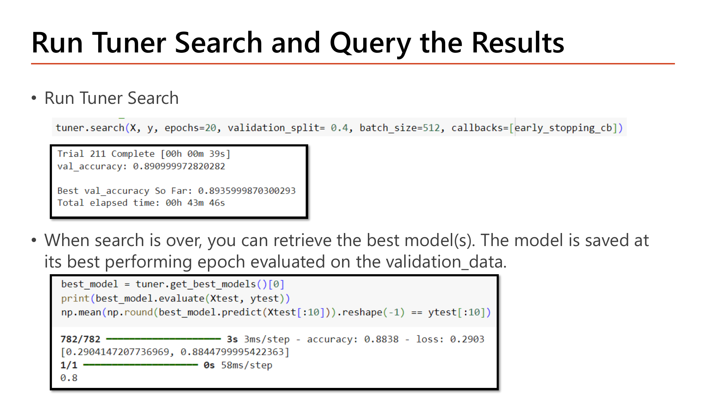
หน้าสุดท้ายของการใช้งานคือขั้นที่ 4: รันค้นหาแล้วดึงผล. จุดที่สวยของ KerasTuner คือ tuner.search(...) รับอาร์กิวเมนต์เหมือน model.fit() ทุกตัว — รวมถึง callbacks ⇒ เอา EarlyStopping จาก §2 มาใช้กับทุก trial ได้เลย ทำให้ trial ที่ไม่มีแววไม่กินเวลาเกินจำเป็น (เป็นการประหยัดซ้อนกับ successive halving ของ Hyperband อีกชั้น).
tuner.search(X, y, epochs=20, validation_split= 0.4, batch_size=512, callbacks=[early_stopping_cb])
best_model = tuner.get_best_models()[0]
print(best_model.evaluate(Xtest, ytest))
np.mean(np.round(best_model.predict(Xtest[:10])).reshape(-1) == ytest[:10])| โค้ด | ทำอะไร |
|---|---|
| tuner.search(X, y, ...) | เริ่มการค้นหา. ใช้ search ไม่ใช่ fit — แต่รับอาร์กิวเมนต์ชุดเดียวกัน |
| epochs=20 | จำนวน epoch ของแต่ละ trial. สำหรับ Hyperband ค่านี้ทำงานร่วมกับ max_epochs ที่ตั้งตอนสร้าง tuner |
| validation_split=0.4 | แบ่ง 40% ไปเป็น validation ⇒ ข้อมูล IMDB 25,000 รีวิวกลายเป็น train 15,000 / validation 10,000. ต้องมี validation เพราะ objective คือ val_accuracy |
| batch_size=512 | batch ใหญ่เพื่อให้แต่ละ trial เร็ว (เทรนหลายร้อย trial จึงต้องเน้นความเร็ว) |
| callbacks=[early_stopping_cb] | ใช้ EarlyStopping ของ §2 กับทุก trial |
| tuner.get_best_models()[0] | คืน list ของโมเดลที่ดีที่สุดเรียงจากดีไปแย่ ⇒ ต้องมี [0] เพื่อหยิบตัวแรก. สไลด์ระบุว่าโมเดลถูกเซฟไว้ ณ epoch ที่ทำคะแนนดีที่สุดบน validation_data |
| best_model.evaluate(Xtest, ytest) | วัดผลบน test set ที่ไม่เคยถูกใช้ตัดสินใจเลย = ขั้นที่ 4 ของหน้า 24 |
| np.round(best_model.predict(...)) | predict คืนความน่าจะเป็น (เช่น 0.83) ⇒ np.round ปัดเป็น 0 หรือ 1 เพื่อเทียบกับ label จริง (เทียบเท่าการใช้ threshold 0.5) |
| .reshape(-1) == ytest[:10] | predict คืนรูปร่าง (10, 1) ต้องแบนเป็น (10,) ก่อนเทียบกับ ytest[:10] ⇒ ได้ array ของ True/False แล้ว np.mean แปลงเป็นสัดส่วนที่ถูก |
Trial 211 Complete [00h 00m 39s]ค้นไปแล้ว 211 trial และ trial ล่าสุดใช้เวลา 39 วินาที — ตัวเลข 211 นี้มาจากการที่ Hyperband รันหลาย bracket แต่ละ bracket มีหลายรอบ
val_accuracy: 0.890999972820282คะแนนของ trial ที่ 211 เอง = 89.10% (ไม่ใช่ตัวที่ดีที่สุด)
Best val_accuracy So Far: 0.8935999870300293ดีที่สุดในบรรดา 211 trial = 89.36% วัดบน validation 10,000 รีวิว
Total elapsed time: 00h 43m 46sใช้เวลาทั้งหมด 43 นาที 46 วินาที. ลองคิดเฉลี่ยต่อ trial:
$$\frac{43\times60 + 46}{211} = \frac{2626}{211} \approx 12.4 \text{ วินาที/trial}$$ต่ำกว่า 39 วินาทีของ trial สุดท้ายมาก — เพราะ trial ส่วนใหญ่ถูกตัดทิ้งตั้งแต่งบน้อย (successive halving ทำงาน!)
best_model.evaluate(Xtest, ytest) ให้ [0.2904147207736969, 0.8844799995422363]list ที่คืนมาเรียงตาม [loss, metric] ⇒ test loss = 0.2904, test accuracy = 88.45%
0.8ความแม่นยำบน 10 รีวิวแรกของ test set = 8 ใน 10 ตัว. ตัวเลขนี้ไม่ควรเอาไปสรุปอะไร เพราะกลุ่มตัวอย่าง 10 ตัวเล็กเกินไป — มันเป็นแค่การตรวจว่าโค้ด predict ทำงานถูก
validation 0.8936 สูงกว่า test 0.8845 อยู่เล็กน้อย (ต่างกัน 0.0091) ซึ่งสมเหตุสมผลและคาดหมายได้: เราคัดโมเดลที่ดีที่สุดจาก 211 ตัวโดยใช้ validation เป็นเกณฑ์ ตัวที่ชนะจึงมี "ความโชคดีกับ validation ชุดนั้น" ปนอยู่ด้วย. ตัวเลขที่ซื่อสัตย์คือ test set ที่ไม่เคยถูกใช้ตัดสินใจ และต้องใช้ครั้งเดียวตอนท้ายสุด — ถ้าเอา test มาวนเลือกโมเดลด้วย มันก็จะกลายเป็น validation อีกชุดหนึ่งทันที (data leakage).
build_model(hp)" ออกจาก "อัลกอริทึมค้นหา" ทำให้เปลี่ยนวิธีค้น (RandomSearch → Hyperband → BayesianOptimization) ได้โดยไม่แตะโค้ดโมเดลเลยแม้แต่บรรทัดเดียว — และเปรียบเทียบอัลกอริทึมกันบนพื้นที่ค้นหาเดียวกันได้อย่างยุติธรรม (ยิ่งถ้าตรึง seed).objective จาก val_accuracy เป็น val_loss ⇒ ทิศทางกลับด้าน (ต่ำสุดแทนสูงสุด) และโมเดลที่ "ดีที่สุด" อาจเป็นคนละตัว เพราะ accuracy กับ loss ไม่ได้เห็นตรงกันเสมอ (loss สนใจความมั่นใจของการทำนาย ส่วน accuracy สนใจแค่ถูก/ผิด). ไม่ลบโฟลเดอร์ directory ก่อนรันใหม่ ⇒ tuner คิดว่าเป็นการค้นเดิมที่ค้างอยู่แล้วทำต่อ แทนที่จะเริ่มใหม่ (แก้ด้วย overwrite=True).hp.* = ขั้น 1, build_model = ขั้น 2, kt.Hyperband = ขั้น 3, get_best_models + evaluate(Xtest) = ขั้น 4. และวงจร build → compile → fit → evaluate → predict คือ Keras workflow เดียวกับ Lesson 5 เพียงแต่ถูกห่อไว้ในลูปของ tuner.hp และต้อง return โมเดลที่ compile แล้ว. กับดัก: ตัวเลือกที่ให้ return โมเดลที่ยังไม่ compilekt.Hyperband(build_model, objective=..., max_epochs=..., factor=..., directory=..., project_name=..., seed=...) — อาร์กิวเมนต์แรกคือฟังก์ชันไม่มีวงเล็บ; max_epochs/factor คือ \(\text{max\_iter}\)/\(\eta\); ใช้ tuner.search(...) ไม่ใช่ tuner.fit(...); และ get_best_models() คืน list จึงต้องมี [0]units_1/dropout_1 เป็น conditional hyperparameter ที่ยังไม่ถูกสร้าง; best val_accuracy 0.8936 เทียบกับ test accuracy 0.8845 (validation สูงกว่าเสมอเป็นเรื่องปกติเพราะเราเลือกโมเดลด้วย validation)![Slide: Hyperparameter Tunning Issues. There are no magic numbers that work for every problem; good values depend on the dataset and the task. Choosing and tuning requires understanding what each hyperparameter does, and some degree of manual intervention and domain knowledge remain valuable. Tuning Guidelines: do not check all parameters manually because it is time consuming and not effective, use a global config for many hyperparameters; if tuning is very slow use a coarse to fine grained approach and rerun tuning appropriately](../assets/slides/dl6-p32-tuning-issues-guidelines.png)
สไลด์ปิดท้ายด้วยสามข้อที่ผูกกับทุกอย่างที่คำนวณมาแล้วในบทนี้:
พื้นที่ค้นหาเล็กลงราว 2.9 เท่า และที่สำคัญกว่าคือทุก trial ในรอบที่สองตกอยู่ในย่านที่รู้แล้วว่ามีแวว แทนที่จะเสียไปกับย่านที่พิสูจน์แล้วว่าแย่. ในสคริปต์ IMDB ที่อาจารย์รัน ผู้สอนทำแบบนี้จริง: รอบแรกค้นทุกอย่างพร้อมกันด้วย BayesianOptimization ได้ผู้ชนะเป็น 1 layer / 64 unit / dropout 0.4 / AdamW / lr ≈ 0.000423 (test accuracy 0.8845) จากนั้นรอบสองล็อกโครงสร้างไว้แล้วค้นเฉพาะ learning_rate ในช่วงแคบ \([2\times10^{-4},\,10^{-3}]\) คู่กับ weight_decay ∈ {1e-5, 1e-4, 1e-3} ⇒ search space เหลือแค่ 2 ตัวแปร และได้ผู้ชนะที่ lr = 0.000624, weight_decay = 1e-5 ซึ่งดันคะแนน test accuracy ขึ้นเป็น 0.8872 — ดีขึ้นอีก 0.0027 จากการค้นที่ถูกที่.
patience/min_delta ทำอะไรและ weight ของ epoch ไหนถูกคืนมา; (2) คำนวณว่า ModelCheckpoint(save_freq=6) เซฟไฟล์ชื่ออะไรบ้าง และอธิบายความต่างของ save/save_weights/save_best_only/BackupAndRestore; (3) คำนวณ learning rate ของ LearningRateScheduler (รวมกับดักการคูณซ้อน 0.03 → 0.027 → 0.0243 → 0.019683) และของ ReduceLROnPlateau (0.03 → 0.003 → 0.001); (4) เขียนอาร์กิวเมนต์ของ TensorBoard callback ได้ครบและบอกว่าแต่ละตัวคุมแท็บไหน; (5) อธิบายด้วยตัวเลขว่าทำไม RandomUniform(0,1) + tanh ทำให้ gradient หาย และ Batch Norm แก้ได้อย่างไร; (6) เปรียบเทียบ Grid/Random/HyperBand/Bayesian ด้วยตัวเลขจริง (911,430 ชุด เทียบกับ 211 trial; งบ 405 เทียบกับ 6,561; UCB ที่ \(\lambda\) ต่างกัน) และเขียนโครง build_model(hp) ของ KerasTuner ได้เอง.
| หน้า | เนื้อหา | สถานะ |
|---|---|---|
| 1 | Keras Callbacks — นิยาม, รายชื่อ hook ทั้งหมด, โค้ด Base Callback class | ✓ หัวข้อ 1 (รูป + โค้ด + คำนวณจำนวนการเรียก) |
| 2 | Built-in Callbacks — 6 ตัวหลัก + รายการ callback ทั้งหมด | ✓ หัวข้อ 1 (รูป + ตารางจับคู่ปัญหา) |
| 3 | EarlyStopping Callback — โค้ด, log การเทรน, ผล evaluate | ✓ หัวข้อ 2 (รูป + โค้ด + ตารางผลจริง) |
| 4 | Results — ตารางไล่ epoch 28–36 | ✓ หัวข้อ 2 (รูป + คำนวณเต็มทีละ epoch) |
| 5 | Save the Model (Manually) + model.summary | ✓ หัวข้อ 3 (รูป + โค้ด + คำนวณ 785/261/524) |
| 6 | ModelCheckpoint Callback — save models / save weights only | ✓ หัวข้อ 3 (รูป + โค้ด) |
| 7 | More Saving Criteria — save_best_only, monitor, mode | ✓ หัวข้อ 3 (รูป + โค้ด + ตาราง) |
| 8 | More Saving Criteria (2) — save_freq | ✓ หัวข้อ 3 (รูป + โค้ด + คำนวณชื่อไฟล์) |
| 9 | BackupAndRestore Callbacks | ✓ หัวข้อ 4 (รูป + โค้ดในภาพ + คำนวณ 6 epoch) |
| 10 | Learning Rate Scheduler / CSV Logger | ✓ หัวข้อ 5 (รูป + โค้ด + คำนวณ lr) |
| 11 | TensorBoard — ภาพรวม, กราฟ loss, histogram | ✓ หัวข้อ 6 (รูป + โค้ดในภาพ) |
| 12 | TensorBoard Main Components — แท็บต่างๆ | ✓ หัวข้อ 6 (รูป + ตารางแท็บ) |
| 13 | TensorBoard Callback — log_dir และพารามิเตอร์ | ✓ หัวข้อ 6 (รูป + โค้ด + timestamp) |
| 14 | Exercise — Circle Dataset | ✓ หัวข้อ 6 (รูป + โค้ดในภาพ + คำนวณ 25 step) |
| 15 | Gradient Vanishing Problems | ✓ หัวข้อ 7 (รูป + โค้ดในภาพ + คำนวณ tanh อิ่มตัว) |
| 16 | Try using ReLU and He initialization + slow learning rate | ✓ หัวข้อ 7 (รูป + อ่านค่าจาก histogram) |
| 17 | Exploding Gradients Problems | ✓ หัวข้อ 7 (รูป + โค้ดในภาพ + 3 อาการ) |
| 18 | Solve Vanishing/Exploding using Batch Norm. | ✓ หัวข้อ 7 (รูป + โค้ดในภาพ + คำนวณ BN) |
| 19 | Hyperparameter Tuning — หลักการและเหตุผล | ✓ หัวข้อ 8 (รูป + ข้อความทำสีครบ) |
| 20 | Hyperparameter Tuning — 3 หมวด | ✓ หัวข้อ 8 (รูป + ตารางหมวด) |
| 21 | Network architecture | ✓ หัวข้อ 8 (รูป + คำนวณจำนวนพารามิเตอร์) |
| 22 | Learning and optimization | ✓ หัวข้อ 8 (รูป + ตารางคำแนะนำ) |
| 23 | Strategies to avoid overfitting | ✓ หัวข้อ 8 (รูป + จับคู่เครื่องมือกับปุ่ม) |
| 24 | Common Steps in Hyperparameters Tuning | ✓ หัวข้อ 8 (รูป + 4 ขั้นตอน) |
| 25 | Grid Search | ✓ หัวข้อ 9 (รูป + คำนวณ 911,430 ชุด) |
| 26 | Random Search | ✓ หัวข้อ 9 (รูป + เทียบ 9 ค่ากับ 3 ค่า) |
| 27 | HyperBand | ✓ หัวข้อ 9 (รูป + คำนวณ bracket เต็ม) |
| 28 | Bayesian Optimization | ✓ หัวข้อ 9 (รูป + คำนวณ UCB 3 ค่า) |
| 29 | Implementation using Keras Tuner | ✓ หัวข้อ 10 (รูป + โค้ด build_model(hp)) |
| 30 | Create a Tuner with Specific Search Algorithms | ✓ หัวข้อ 10 (รูป + โค้ดในภาพ + search space) |
| 31 | Run Tuner Search and Query the Results | ✓ หัวข้อ 10 (รูป + โค้ดในภาพ + อ่านผลทีละบรรทัด) |
| 32 | Hyperparameter Tunning Issues | ✓ หัวข้อ 11 (รูป + คำนวณ coarse-to-fine) |
| 33 | References | etc — สไลด์บรรณานุกรมล้วน (Chollet, Géron, Ng, Heaton) ไม่มีเนื้อหาวิชา |
สงสัยตรงไหน ถามได้เลยในแชท — ผมเป็นผู้สอนของคุณ ถามซ้ำได้ ถามลึกได้ ไม่ต้องเกรงใจ.